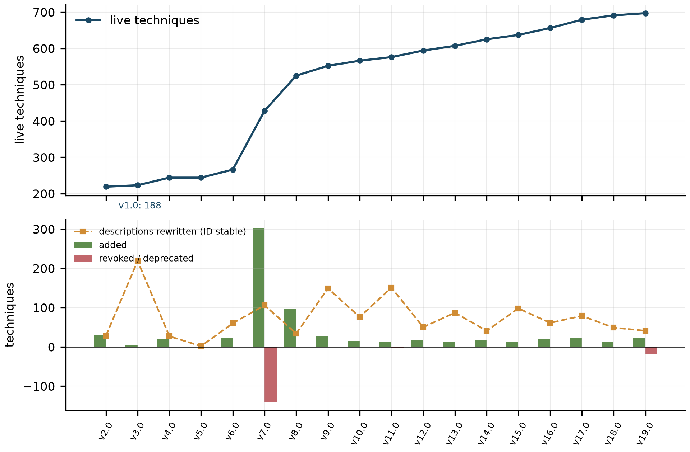
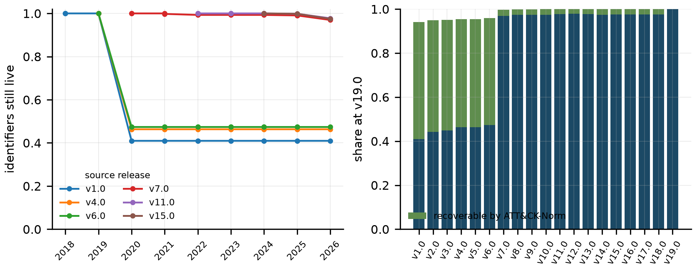
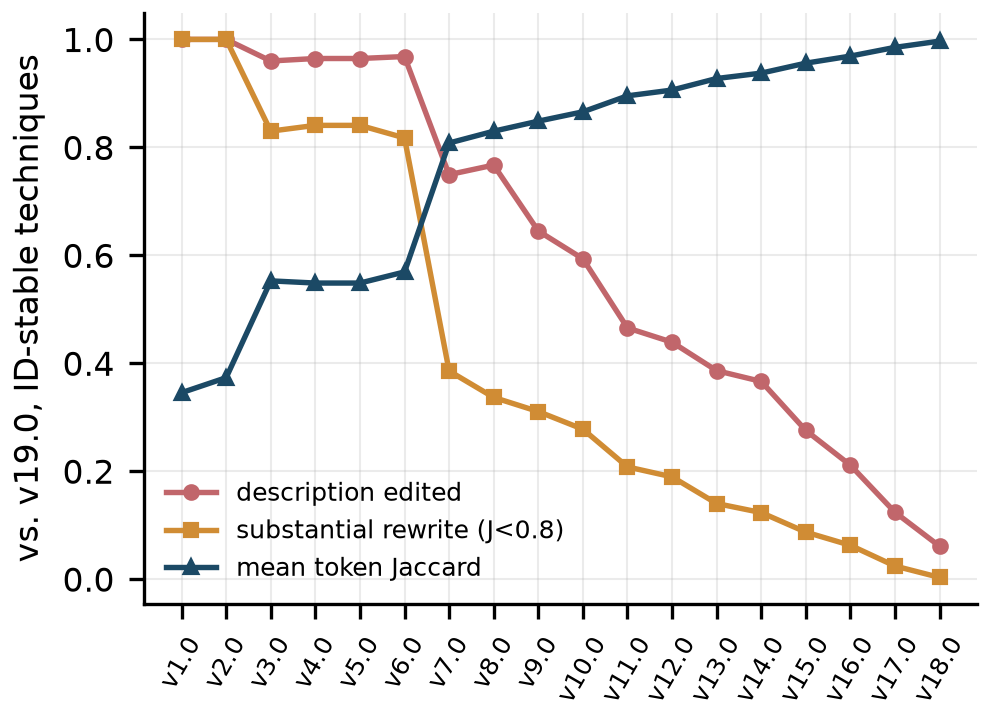
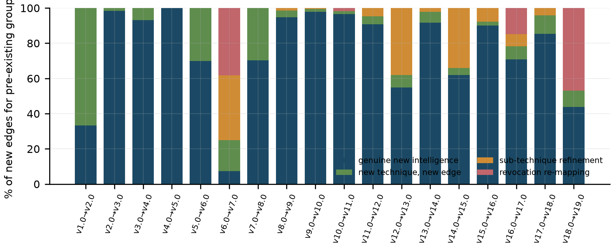
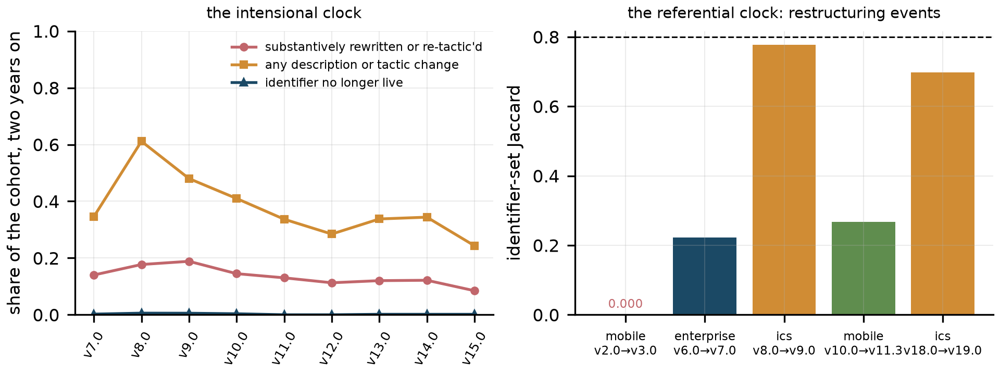
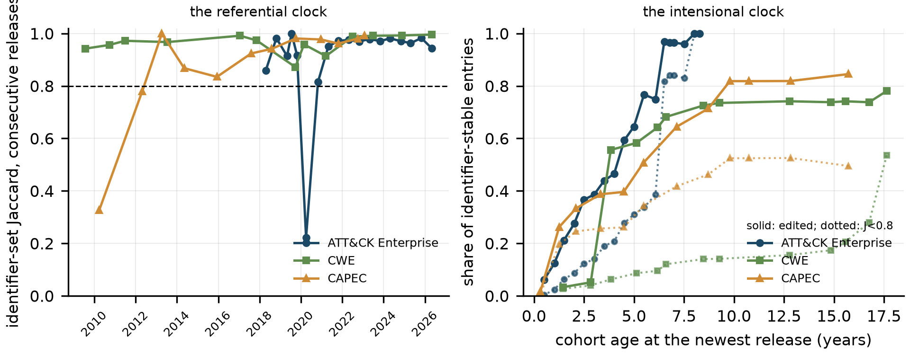
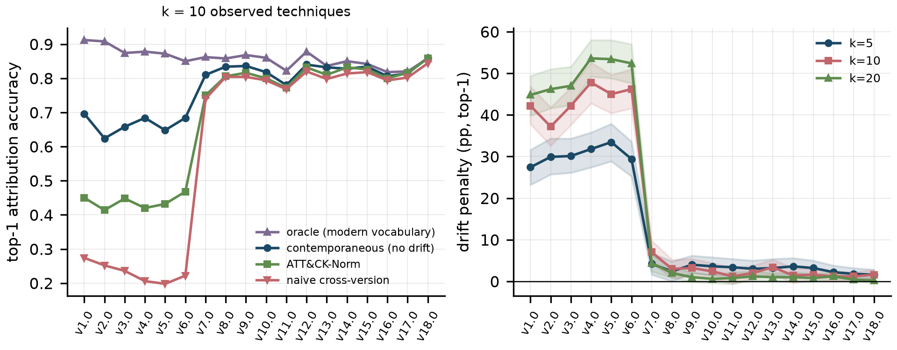
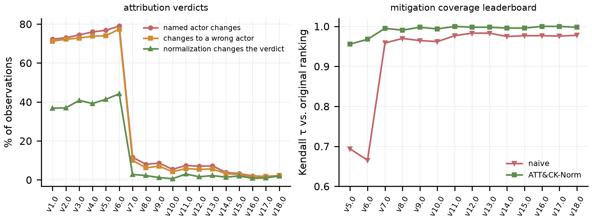
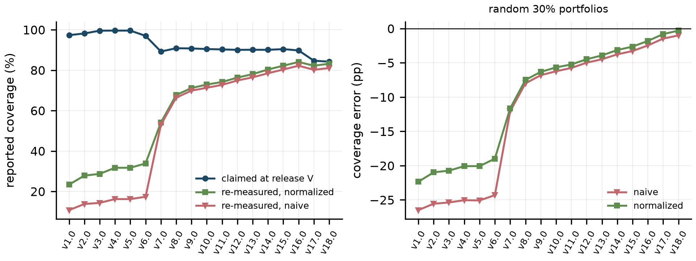
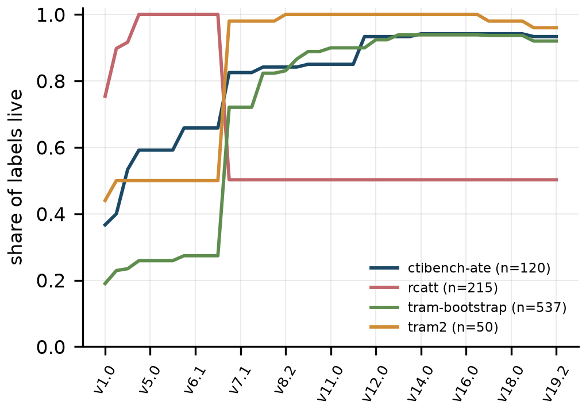

Abstract
Security machine learning spent a decade learning to control for bias in its data. All of that discipline assumes something it never states: that the label space is fixed. In cyber threat intelligence it is not. MITRE ATT&CK is the instrument in which coverage, attribution and benchmark labels are denominated, and it has been re-issued 109 times across three domains since January 2018 without any downstream result recording which issue it used. From a longitudinal database of 106 domain-release pairs we measure four drift processes separately, then run controlled experiments holding the adversary intelligence fixed while only the vocabulary moves. MITRE's Enterprise identifier accounting is complete — every revoked technique carries exactly one successor edge and none dangle — and post-2020 identifier survival to the newest release never falls below 0.970. Yet 0.749 of the identifier-stable techniques of v7.0 have edited descriptions by v19.0, ATT&CK's own version field detects a rewrite at precision 0.447 and recall 0.641, 0.323 of new group-technique edges for pre-existing groups are bookkeeping rather than intelligence, and a frozen capability that claimed 97.0% coverage reads 17.4% at v19.0, most of that fall being legitimate denominator growth and 16.5 points of it pure identifier artefact. Vocabulary mismatch alone changes the named threat actor in 0.722 of pre-restructuring observations and still in 0.022 across one modern release boundary, concentrated on exactly the groups that are identifiable at all; after correction across all fifty-four experimental cells the legacy effect survives everywhere and the modern effect in a minority. A trained text-to-technique classifier carried across eras loses 0.057 of micro-F1 to the label space alone and 0.678 to the text shifting under it, so ontology drift is separable from concept drift, an order of magnitude smaller, and half-repairable where concept drift is not. A blind annotation pilot shows the paper's rewrite metric is a high-recall, low-precision screen for meaning change, and the same instrument applied to CWE and CAPEC finds the intensional clock in all three MITRE vocabularies and the referential instability mostly in ATT&CK. Nine of 33 sampled recent papers declare the release they used, six exactly. Normalization recovers 0.42 to 0.53 of the legacy penalty, almost nothing modern, and nothing semantic, so the contribution is a reporting contract rather than a crosswalk, shipped with a tool that prints it.
Introduction
A coverage percentage, an attribution verdict and a benchmark score are measurements, and every measurement is stated in units. In cyber threat intelligence the unit is the ATT&CK technique identifier, and the number means something only relative to the edition of the catalogue supplying both the numerator's vocabulary and the denominator's cardinality6374. Between an attribution system published in 2019 and a successor published in 2023 that beats it on the same corpus, the label space lost roughly half its identifiers in one release, gained a level of abstraction that did not previously exist, and rewrote three-quarters of the descriptions of the terms that survived. Neither paper declares its release; no venue asks. Those two numbers are readings from different instruments, reported in the same units by convention alone.
Security machine learning knows this class of error: TESSERACT gave the field a vocabulary for temporal and spatial bias67, Arp et al. catalogued ten recurring methodological failures35, and drift detection and conformal rejection carried the concern into deployment2270. Every one of those instruments assumes a fixed label space — dataset-shift taxonomy holds the class set constant33, class-incremental learning handles only the additive quadrant24, evolving-class-ontology work only relabelling43 — while ATT&CK performs addition, deprecation, revocation, re-cutting, cross-layer promotion and silent redefinition. Concept drift moves the data under a fixed ruler; ontology drift moves the ruler, and a model perfectly robust to the first still reports an incomparable number under the second.
We argue by measurement and make the concessions the measurement forces. The apparatus is real: pinning a release is MITRE's documented first-class workflow, tombstones are guaranteed, revocation edges are typed, and a change-computation tool ships with an explicit class for objects patched without a version increment173448. Anyone holding that documentation refutes a naive version of this paper in a paragraph. The noise floor is real: products pinned to one release disagree about the label for the same behaviour74 and only 52 of 152 ATT&CK v15.1 groups (34.2%) have any technique unique to them59. We do not claim drift dominates that noise, only that it is separable by construction, and we test additivity rather than assuming it (Section 7.3). The remedy is weak: normalization is worth tens of points on pre-2020 artefacts and under one point on modern ones, with an interval spanning zero in most modern conditions (Section 8).
Six contributions follow:
- longitudinal measurement of drift over every public release of all three domains, decomposed into processes that behave differently in time (Section 6)
- controlled experiments on attribution, coverage, mitigation ranking and benchmark label validity in which only the vocabulary moves (Sections 7 and 9)
- decomposition of apparent knowledge growth into intelligence and bookkeeping (Section 6.4)
- normalization protocol whose measured limits are themselves the result (Section 8), with the reporting discipline that follows (Section 10) and a reference implementation that prints the residual ledger (Section 8.4)
- a trained classifier carried across eras with the vocabulary component separated from the data-drift component, two real systems on three real gold sets with per-item verdicts, and named public coverage layers re-measured (Sections 7.8 and 7.9)
- validation of the measurement itself: a threshold sweep, convergent validity, a shipped human-annotation instrument with a blind pilot, and the same instrument applied to CWE and CAPEC as a same-institution control (Sections 6.3 and 6.6)
The problem is current, not historical: four months before this analysis, ATT&CK v19 separated Defense Evasion into a stealth and an impairment tactic, as MITRE's release notes state85; the notes' own revocations list shows the T1562 family revoked into the new arrangement, and our reading of the bundles adds what the notes do not say, that TA0005 was renamed in place rather than retired (Section 6.2).
Background: ATT&CK as a Versioned Ontology
ATT&CK organises adversary behaviour into tactics, techniques and sub-techniques and links them to intrusion sets, software, mitigations and data components. Its design documentation states that inclusion criteria are non-stationary and that the abstraction level of a technique is an editorial choice rather than a natural kind14. Practitioners defending its structure describe it as an ontology rather than a taxonomy77, which places it inside a literature where change management is the core task of both versioning and evolution56.
That literature supplies the yardstick. OBO Foundry requires version IRIs, release immutability and perpetual resolvability55, mandates identifier uniqueness and forbids reuse53, and requires in its term-stability principle that the referent of an identifier not change, separating exact from inexact successors and making obsoletion visible in the human-readable label54. OWL has supplied versionIRI, priorVersion, backwardCompatibleWith and owl:deprecated for two decades57, and COnto-Diff types complex change operations as evolution mappings rather than untyped diffs26. Biomedicine demonstrated the downstream consequence: Gene Ontology evolution changes the interpretation of analyses computed over it, so a conclusion moves with no new experiment69. Security vocabularies have their own instances, in CVE lifecycle states31, CVE-to-CWE-to-CPE abstraction-ladder instability32, CVSS fragmentation across versions39, and knowledge-graph work tracking vocabulary churn and instance usage as separate time series37.
Measured against that yardstick ATT&CK scores well on some axes and has nothing on others. Releases are immutable and addressable155, and retirement is typed and non-destructive: an object with a successor is revoked and carries a revoked-by edge, one without is deprecated, and both are retained so dependent workflows do not break1. The Center for Threat-Informed Defense funds ATT&CK Sync to flag mappings affected by a release5, an institutional concession that staying in sync is an operational burden. The Navigator layer format can record the content version of a coverage layer, but the field is optional and defaults silently to current15, the upgrade path is manual and unrecorded16, and widely used tooling omits the field altogether79. What ATT&CK lacks is the inexact-successor relation, a controlled obsolescence-reason vocabulary, label-level visibility of obsoletion, prior-version and compatibility links, and a typed evolution mapping published as an artefact in its own right. Sections 6 and 8 price each absence. One structural fact shapes everything downstream: the March 2020 introduction of sub-techniques was not an addition but a re-cut, both systematizations of the field treat it as a known instability4763, and Section 6.5 shows it is one draw from a live hazard rather than a closed wound.
Problem Formalization and Drift Taxonomy
Let a release V of an ATT&CK domain determine a label space L_V of live technique identifiers together with an intension map ι_V sending each identifier to what defines it: description, detection guidance, tactic assignment, platforms. A CTI artefact is a pair (A, V) with A ⊆ L_V. In deployed practice V is almost never recorded (Table 12), so what circulates is A alone. Two artefacts are comparable when expressed in the same label space under the same intension map — the ordinary requirement that measurements reported in the same units be reported in the same units.
Six operators carry (L_V, ι_V) to (L_W, ι_W).
- O1 Addition: a new identifier with no predecessor, the only operator class-incremental learning handles24 and the only one benign for backward comparison; forward it is not benign, because a growing denominator makes a frozen capability's percentage fall with no change in the capability (Table 8).
- O2 Deprecation: withdrawn with no successor, marked and retained1.
- O3 Revocation with a typed successor: the well-handled case on which the ecosystem's defence rests, and in our corpus every revoked Enterprise identifier resolves to a live one (Table 3).
- O4 Re-cut: a concept split across successors, or several merged into one. Because
revoked-byis a function and never one-to-many, a split is representable only as merges onto the narrowest survivor. It is not true that the relation cannot express the v19 re-cut; it can, as merges. The defect is annotation rather than expressiveness — the merge is unlabelled, so a consumer applying the crosswalk mechanically cannot distinguish an exact successor from a narrowing, which ontology engineering settled by splitting the successor relation into exact and inexact variants54 and typing complex change operations2656. - O5 Cross-layer reassignment: a technique demoted onto a sub-technique, a sub-technique promoted, or a technique promoted to a tactic; the crosswalk carries no abstraction-level annotation, and a promotion to the tactic layer is not representable at all, since
revoked-bycannot point a technique at a tactic and no tactic object in the corpus carries a revocation edge. - O6 Intensional rewriting: the identifier survives and what it denotes moves, invisible to every identifier-based mechanism in the ecosystem.
O1 to O5 are referential; O6 is intensional, and that split organises the paper because the two components have different dynamics, different downstream consequences and different repair prospects. Cutting across it is a more practical distinction. Call an operator signalled if the published artefact carries a machine-readable marker a consumer can test. O2 and O3 are signalled; O4 and O5 are partially signalled, since the edges exist but carry no type, so a consumer learns that something changed and not what. O6 is unsignalled in the artefact a consumer holds: the bundle carries no marker distinguishing a rewritten technique from an untouched one, and its only candidate, the object version field, operates at precision 0.447 and recall 0.641 (Section 6.3). MITRE's change tool will compute a line-level description diff between any two releases34, so the information is derivable by a consumer holding both bundles who chooses to look; what does not exist is a signal in the artefact itself, which is what a pipeline consumes. The well-handled component is the one everybody points at; the unhandled one is the one nobody can see.
Two artefacts are version-comparable when both have been projected onto one reference release and the projection's residual is declared. Projection is transitive closure over the retirement relation; it is a function and not an injection, so it can merge and land on a different abstraction level, and its residual is the four-way ledger of kept, merged, demoted and dropped. A protocol returning only the projected set destroys exactly the information a reader needs to judge comparability (Section 8). Ontology drift accordingly damages construct validity, because after O6 the construct measured is not the construct the labels name; internal validity, because after O4 or O5 measured profile breadth falls with no change in the intelligence; external validity, because after O1 an unchanged capability reports a falling number; and conclusion validity, which Section 7 shows reaches the named actor, the top-ranked mitigation and the pass/fail verdict.
Because a study of drift is exposed to its own subject, we commit in advance to four requirements and audit them in Section 11: R1, the contrast holds everything constant except the vocabulary; R2, a stated noise model, since holding a nuisance term at zero establishes separability and says nothing about additivity; R3, a declared closure boundary; R4, a named falsifier.
Data and Methodology
We clone MITRE's attack-stix-data repository, whose index addresses every release as a separate STIX 2.1 bundle at a stable path, and whose published contract defines the two-class retirement semantics we rely on1. Its index enumerates 109 versioned bundle entries, 41 Enterprise, 41 Mobile and 27 ICS; our extraction materialises 106 domain-release pairs, 41 Enterprise, 38 Mobile and 27 ICS. The three-entry difference falls entirely at Mobile v11.0 to v11.2, pre-release entries the published sequence skips as it steps from v10.1 to v11.3, which we exclude. We report both counts rather than the convenient one, because undeclared denominators are how measurements go wrong. Each bundle is parsed into a relational store holding every object's identifiers, flags, x_mitre_version, timestamps, kill-chain phases, platforms, and the text and SHA-256 digests of the description and detection fields, with every typed relationship. Release-level analyses use major releases only — the .0 release of each major version, or the earliest available — giving 19 Enterprise, 19 Mobile and 12 ICS analysis points, because patch releases are irregular in cadence and scope, so mixing them in would make a transition mean different things in different eras. Section 9 deliberately does the opposite and uses every published release, since there the question is which release a label file could have been written against.
| Domain | Releases analysed (major / all) | First | Last |
|---|---|---|---|
| Enterprise | 19 / 41 | v1.0 (2018-01-17) | v19.0 (2026-04-28) |
| Mobile | 19 / 38 | v1.0 (2018-01-17) | v19.0 (2026-04-28) |
| ICS | 12 / 27 | v8.0 (2020-10-27) | v19.0 (2026-04-28) |
The live set is the attack-pattern objects with both retirement flags false, and it is the denominator of every coverage claim. Identifier Jaccard is computed over consecutive majors with a revoked identifier treated as absent, since it is unusable as a label even though the object is retained. An identifier is recoverable at a target if transitive revoked-by closure from it, cycle-safe and bounded at ten hops, terminates in the live set. Semantic drift is measured on identifier-stable techniques only: an edit is inequality of description digests, similarity is the Jaccard index over lowercased alphanumeric token sets, and a substantial rewrite is similarity below 0.8, reported alongside the mean-similarity series. Bag-of-words similarity is deliberately crude: model-free, and incapable of importing an embedding's own drift into a measurement of drift. Growth decomposition assigns each newly added group-technique edge to one cause in a fixed order — new actor, revocation re-mapping, sub-technique refinement, new technique, genuine new intelligence — with re-mapping tested before refinement so an ambiguous edge is charged to bookkeeping.
Four experiments share one principle, satisfying R1: the intelligence is held fixed and only the vocabulary varies. Attribution. The analysis release is v19.0. Modern group profiles are back-projected into a legacy vocabulary by a map built once per pair: a modern technique maps to itself if live then, else to the pre-revocation identifier resolving onto it, else to the nearest live ancestor within five hops, else it is dropped as a behaviour with no expression in that era. Each of 500 trials samples a group, draws k = 10 techniques from its modern profile, and scores four conditions over identical draws — back-projected (labelled contemporaneous in the released results files), naive, ATT&CK-Norm, oracle. Scoring is IDF-weighted cosine; the drift penalty is back-projected minus naive top-1 accuracy; recovery is the share of that penalty normalization returns; intervals are paired bootstrap with 2,000 resamples, and robustness sweeps three scorers and two profile definitions. The sweep contains the result's one genuine null and we report it: at k = 20 the v18.0 penalty is 0.2 points with an interval spanning zero, and excluding software-mediated techniques from group profiles cuts the v7.0 penalty from 5.3 to 1.3 points. The legacy effect survives every cell of the sweep; the single-release modern effect is visible at k = 5 and k = 10 and disappears at k = 20, which is what a small effect measured on richer observations should do.
Coverage. A capability is frozen at a release as the techniques reachable by mitigates edges there, then re-measured at v19.0 naively and after normalization, with a 500-sample random-portfolio sweep and a prevalence-weighted variant.
Conclusion instability. The same machinery is read out at verdict level and as Kendall tau over mitigation rankings.
Label validity. Four deployed corpora are parsed from their own label files rather than their papers, every identifier is checked for liveness at every published release, and the provenance interval is the set of releases at which every identifier is simultaneously live — an empty interval meaning the artefact mixes mutually exclusive vocabularies.
Four further measurements were added in revision and are described where they are reported. A trained text-to-technique classifier is evaluated across eras with the vocabulary component separated from the data-drift component by a matched-vocabulary scoring and an in-domain ceiling (Section 7.8), and two such systems are placed on a leaderboard over three real gold sets with per-item verdict flips counted, alongside named public Navigator layers re-measured at v19.2 (Section 7.9). The rewrite threshold is tested by a sweep, by convergent validity against MITRE's version field and structured-field changes, and by a blind annotation pilot on a stratified 150-pair sample under a shipped codebook (Section 6.3). CWE and CAPEC are measured on the same instrument as a same-institution control (Section 6.6). Every contrast in the attribution experiment carries an exact paired sign test corrected across all fifty-four rows by Holm and by Benjamini-Hochberg, small-count rates carry Clopper-Pearson or Wilson intervals, and the coverage measurement is repeated in Mobile and ICS (Sections 6.5, 7.2, 7.5, 7.7).
Every number in Sections 6 to 9 is produced by scripts in code/ from public bundles and label files, runs end to end from one shell script, and is written to JSON from which the tables are generated rather than transcribed. The reproduction package is that directory together with data/results/; it holds twenty-seven generated tables, of which twenty-two are reproduced here, several in condensed form, and the rest — the full churn, survival and semantic-drift series, the per-row corrected p-values, the interval table and the tactic-layer census — are shipped rather than printed, for length. Three evidence tiers are marked throughout: Tier A, our own measurement and artefacts read in full from local clones; Tier B, secondary literature reachable here only through search summaries, attributed as reported and never quoted, a tier from which the twelve closest works were promoted in revision by reading them in full (Section 3.1); Tier C, an audited absence, stated with the bound of the search that found it.
Measuring Ontology Drift in ATT&CK
6.1Two clocks, not one

| Transition | Date | Live | Added | Revoked | Deprecated | Renamed | Desc. rewritten | Detection rewritten | Tactic changed | J(ID) | Edges +/- |
|---|---|---|---|---|---|---|---|---|---|---|---|
| v6.0→v7.0 | 2020-03-31 | 428 | 302 | 129 | 11 | 17 | 106 | 60 | 10 | 0.222 | +1235/−750 |
| v16.0→v17.0 | 2025-04-22 | 679 | 24 | 1 | 0 | 5 | 79 | 5 | 2 | 0.963 | +313/−558 |
| v17.0→v18.0 | 2025-10-28 | 691 | 12 | 0 | 0 | 2 | 49 | 583 | 0 | 0.983 | +328/−11 |
| v18.0→v19.0 | 2026-04-28 | 697 | 23 | 17 | 0 | 4 | 41 | 0 | 198 | 0.944 | +270/−86 |
J(ID) is the identifier Jaccard; edges are group-to-technique uses edges. All eighteen transitions are in Figure 1 and the package.Read the identifier column alone and the episodic reading is irresistible. One transition, v6.0 to v7.0, has an identifier Jaccard of 0.222, adds 302 techniques, revokes 129, deprecates 11, and rewrites the group-technique graph by removing 750 edges and adding 1,235. The next largest drop in eight years is 0.944, at the most recent transition. Read any other column and that reading collapses. Description rewrites among surviving techniques never fall below 27 and reach 151 at v10.0 to v11.0, whose identifier Jaccard is 0.976. Detection rewrites are burstier: 583 of 691 surviving techniques had their detection guidance rewritten between v17.0 and v18.0, a transition any identifier-keyed diff reports as one of the quietest in ATT&CK's history. The tactic column, empty or near-empty for sixteen transitions, reads 198 at the most recent. This is the two-clock structure and it is the first result: a slow episodic referential clock and a fast continuous intensional clock, so that any risk statement reporting one without the other is wrong by a factor that depends on which column the reader happened to look at.
6.2Survival: the concession, measured

revoked-by closure overlaid.| Source release | Date | Identifiers | Live at v19.0 | Survival | Revoked | Deprecated | Recoverable | Half-life |
|---|---|---|---|---|---|---|---|---|
| v1.0 | 2018-01-17 | 188 | 77 | 0.410 | 100 | 11 | 100 | v7.0 (2.2 y) |
| v6.0 | 2019-10-23 | 266 | 126 | 0.474 | 129 | 11 | 129 | v7.0 (0.4 y) |
| v7.0 | 2020-03-31 | 428 | 415 | 0.970 | 12 | 1 | 12 | not reached |
| v10.0 | 2021-10-21 | 566 | 551 | 0.973 | 15 | 0 | 15 | not reached |
| v18.0 | 2025-10-28 | 691 | 674 | 0.975 | 17 | 0 | 17 | not reached |
The recoverable column equals the revoked column in every Enterprise row and the absent count is zero throughout. Recomputing from the v19.2 bundle gives 858 attack-pattern objects — 697 live, 149 revoked, 12 deprecated — and 149 revoked-by edges from 149 distinct sources. Every revoked Enterprise technique has exactly one successor and none dangle, and we concede this without qualification because conceding it is what makes the remaining argument non-trivial1. Each boundary of the concession is a finding. It is Enterprise-only: in Mobile, 34 survival rows record identifiers absent rather than tombstoned, and all 76 ATT&CK identifiers of Mobile v1.0 are gone from v3.0 onward with no successor edge of any kind. The relation is never one-to-many, so a split appears only as merges onto whichever survivor the curator judges narrowest, with eight Enterprise targets absorbing 20 predecessors and the largest absorbing five. And retirement routinely crosses abstraction levels: of the 149 edges, 119 map a top-level technique onto a sub-technique, 13 top onto top, 10 sub onto sub, and 7 promote a sub-technique to a parent. A crosswalk that resolves in one hop, reports success, and silently narrows the original assertion is not broken; it is a 1:1 relation in a situation that needs more54.
The tactic layer has no retirement relation at all: across all three domains and every release our extraction finds 5,599 revocation edges and none involve a tactic object. Between v18.1 and v19.2 the object carrying TA0005 keeps its UUID and identifier while its name changes from Defense Evasion to Stealth, its shortname from defense-evasion to stealth, and its x_mitre_version stays at 1.0, with TA0112 Defense Impairment minted alongside and T1562 retired into the new arrangement. Those are our measurements of the two bundles; that v19 separated Defense Evasion into a stealth and an impairment tactic is stated in MITRE's release notes85. Any analytic joining on TA0005 across that boundary compares two different concepts with no revocation, no version increment and nothing to follow. This is what the stability principle exists to forbid: a changed referent requires a new identifier54.
6.3Intensional drift, and why ATT&CK cannot signal it

| Source release | ID-stable techniques | Description edited | Mean token Jaccard | Substantial rewrite (J<0.8) |
|---|---|---|---|---|
| v1.0 | 77 | 1.000 | 0.345 | 1.000 |
| v7.0 | 415 | 0.749 | 0.808 | 0.386 |
| v11.0 | 563 | 0.465 | 0.895 | 0.208 |
| v15.0 | 621 | 0.275 | 0.956 | 0.087 |
| v18.0 | 674 | 0.061 | 0.997 | 0.003 |
Table 4 is a function of elapsed time, not of release quality: the v18.0 row is low because one transition separates it from the analysis release. The right reading is cohort decay: Of the 415 techniques live at v7.0 and still live at v19.0, 0.749 have edited descriptions and 0.386 are rewritten past the substantial threshold, at mean similarity 0.808. The v11.0 and v15.0 cohorts decay the same way over shorter horizons (Table 4), at identifier survival of 0.977 and 0.975. The instrument keeps the scale markings and moves what they mean. On a practitioner's clock, no Enterprise cohort from v7.0 onward ever reaches 10% hard identifier staleness. The time to 10% substantive staleness — gone, substantially rewritten, or reassigned to another tactic — is 0.50 to 2.01 years with a median of 1.51, and 0.99 to 2.01 years with a median of 1.52 once tactic changes and revocations are excluded so the recent re-cut cannot be blamed. Semantic half-life is 4.5 to 6.1 years. A pinned post-2020 label set has an infinite identifier half-life and an eighteen-month first-10% semantic staleness schedule, simultaneously.
| Transition | Techniques live in both | Text changed, version bumped | Text changed, no bump | Bump, no text change | Neither |
|---|---|---|---|---|---|
| v2.0→v3.0 | 219 | 0 | 219 | 0 | 0 |
| All | 8359 | 871 | 487 | 1077 | 5924 |
Over 8,359 carried-over pairs, 1,358 (0.162) had their description rewritten; 487 of those (0.359) carried no version increment, and 1,077 version increments carried no text change. As a detector of description change, x_mitre_version has precision 0.447 and recall 0.641: a consumer who re-reads every technique whose version increased does nearly half the work for nothing and still misses over a third of the changes. MITRE's own tooling knows this, defining a distinct change class for objects patched while the version stayed the same and annotating unintended version changes as a historical defect3448, while the published consumer contract offers a binary current-or-retired filter and no expression for a surviving object whose meaning moved1. The gap is architectural, not an oversight, and it is the answer to the strongest practical objection in the field: the advice to pin a release is correct and insufficient, because pinning fixes identity, not intension.
Is the rewrite threshold doing the work? The substantial-rewrite rule, token Jaccard below 0.8, is a choice, so we test it three ways and ship a fourth. First, the threshold sweep (Table 20). Moving the cut from 0.5 to 0.95 moves the v7.0 cohort's substantial share from 0.125 to 0.559 and the median time to 10% substantive staleness from 3.26 to 0.99 years. At every threshold the v7.0 cohort is rewritten far beyond its identifier loss of 0.030 and the ordering of cohorts is unchanged, so the two-clock structure does not depend on the threshold, while the eighteen-month figure is a reading at 0.8 and is quoted with the threshold attached from here on.
| Threshold | v7.0 cohort substantial share | v15.0 cohort substantial share | Time to 10% substantive staleness, median (min, max) years |
|---|---|---|---|
| J < 0.5 | 0.125 | 0.014 | 3.26 (0.50, 5.00) |
| J < 0.7 | 0.284 | 0.043 | 2.02 (0.50, 3.01) |
| J < 0.8 | 0.386 | 0.087 | 1.50 (0.50, 2.01) |
| J < 0.9 | 0.487 | 0.148 | 1.00 (0.50, 1.56) |
| J < 0.95 | 0.559 | 0.177 | 0.99 (0.48, 1.08) |
Second, convergent validity against signals that do not read the text, the version field MITRE's own tooling treats as the change marker3448 and the structured fields. Over the 8,359 identifier-stable consecutive-major pairs, 1 − J predicts a MITRE major version increment with AUC 0.622, a structured-field change (tactic set, platform set or name) with AUC 0.627 and a name change with AUC 0.927; Cohen's kappa between J < 0.8 and the major-version increment is 0.112. Four alternative model-free metrics (difflib ratio, character 3-gram Jaccard, sentence-set Jaccard, TF-IDF cosine) correlate with token Jaccard at Spearman 0.964 to 0.980 and give AUCs within 0.01 of it, so the choice of metric within the family is immaterial. The weak concordance with the version field cuts both ways: MITRE's own signal detects a text edit at precision 0.447 (Table 13), so neither instrument can validate the other, and whether a rewrite changes what an identifier denotes is not a question text statistics can settle. Third, we therefore wrote a codebook for exactly that question and ran a pilot on a stratified sample; Section 6.3.1 reports it. Fourth, the human study the pilot stands in for is shipped ready to run: codebook, the 150-item sample blind to J, the answer key and the protocol, in paper/annotation/.
6.3.1 Does a low Jaccard mean the meaning moved? A blind pilot
The codebook asks the term-stability question of the ontology literature54, the one Gene Ontology work showed to be the one that moves conclusions69, of a pair of descriptions carrying the same identifier: would an observation correctly tagged under release A still be correctly tagged under release B, and the reverse? It answers on a four-level ordinal scale, 0 cosmetic or editorial, 1 clarification with scope unchanged, 2 scope change, 3 redefinition, which is a coarsening of the typed change operations of COnto-Diff26 to what a reader of two texts can judge, with decision rules that judge the boundary of the denoted behaviour and not the volume of text, and it forbids the annotator any knowledge of the release numbers, the Jaccard value or the paper's hypothesis. The sample is 150 pairs drawn from the 1,358 edited identifier-stable pairs across consecutive Enterprise majors, stratified into five Jaccard bins of 30 so that every part of the similarity range is represented. The human study this instrument is written for has not been run; in its place we report a pilot in which two language models, given only the codebook and the annotator-facing file, annotated all 150 pairs independently. We state plainly what such a pilot can and cannot show. It cannot substitute for two CTI analysts. It can show whether the codebook is applicable at all, whether two independent readers of the texts converge under it, and how the paper's threshold relates to a reading that judges meaning rather than tokens.
The two annotators agree closely: Cohen's kappa 0.872 on the four-level scale, 0.942 with quadratic weights, exact agreement on 0.920 of items and agreement within one level on all of them, and kappa 0.774 on the binarised scale where level 2 or 3 counts as substantive. Excluding the eight items the codebook uses as worked examples leaves kappa at 0.861 and 0.745. Their level distributions are 77, 43, 27, 3 and 76, 43, 28, 3, so about one edited pair in five moves the boundary of what the identifier denotes and one in fifty redefines it. All three redefinitions sit in the lowest Jaccard bin, at J of 0.33, 0.33 and 0.19.
| Reference | n | Substantive rate, sample | Precision of J<0.8 | Recall of J<0.8 | Population-weighted precision / recall | AUC of 1 − J | Youden-optimal threshold |
|---|---|---|---|---|---|---|---|
| Annotator 1 | 150 | 0.200 | 0.267 | 0.800 | 0.216 / 0.594 | 0.735 | 0.670 |
| Annotator 2 | 150 | 0.207 | 0.289 | 0.839 | 0.232 / 0.653 | 0.767 | 0.728 |
| Agreement subset | 139 | 0.180 | 0.262 | 0.880 | 0.198 / 0.709 | 0.795 | 0.670 |
| Jaccard bin | Substantive rate, annotator 1 | Annotator 2 | Agreement subset |
|---|---|---|---|
| J ≥ 0.95 | 0.000 | 0.000 | 0.000 |
| 0.80 to 0.95 | 0.200 | 0.167 | 0.120 |
| 0.60 to 0.80 | 0.167 | 0.167 | 0.115 |
| 0.40 to 0.60 | 0.200 | 0.233 | 0.207 |
| J < 0.40 | 0.433 | 0.467 | 0.448 |
The result changes how the paper's rule should be read, and we change it. The rule is a screen, not a measurement of meaning change: it catches 0.80 to 0.88 of the pairs the annotators call substantive, at precision 0.26 to 0.29, so roughly three of every four pairs the paper calls a substantial rewrite are clarifications or editorial work that leave the denoted behaviour where it was, and the one that is not is far more likely to sit below J = 0.4 than just below 0.8. The Youden-optimal threshold against either annotator lies between 0.67 and 0.73, below the paper's 0.8, which is consistent with a rule chosen for recall. On the population weighting the substantive rate among edited pairs is 0.105 to 0.139, against a J < 0.8 rate of 0.381 among the same pairs, so the "substantially rewritten" shares of Table 4 overstate the share whose meaning moved by a factor of roughly three. The eighteen-month first-10% staleness clock of Section 6.3 is therefore the time for a tenth of a cohort to be gone, reassigned, or rewritten heavily enough to need re-reading, which is what a consumer must budget for; the time for a tenth of a cohort to change denotation is longer, and by the pilot's ratio about three times longer, though a clock estimated from 150 model-annotated pairs is not one we print as a number. Two facts the pilot leaves intact matter more than the one it corrects. Substantive change is not zero in any bin below 0.95 and reaches 0.43 to 0.47 in the lowest, so heavy rewriting under a stable identifier does move meaning, at a rate that rises monotonically with textual distance. And ATT&CK's own version field is no better a guide to it: the major-version increment agrees with J < 0.8 at kappa 0.112 and with nothing else the bundle exposes, which leaves the consumer, once again, with no signal in the artefact for the change that matters most.
6.4How much of ATT&CK's growth is intelligence?

| Transition | New edges (pre-existing groups) | Genuine new intel | New technique | Sub-technique refinement | Revocation re-mapping | Bookkeeping share |
|---|---|---|---|---|---|---|
| v6.0→v7.0 | 1059 | 78 | 187 | 390 | 404 | 0.750 |
| v18.0→v19.0 | 164 | 72 | 15 | 0 | 77 | 0.470 |
| All transitions | 3074 | 1752 | 330 | 487 | 505 | 0.323 |
Across all Enterprise transitions 5,516 group-technique edges are added, of which 2,442 belong to groups newly added to ATT&CK. Of the remaining 3,074, 1,752 are genuine new intelligence about a pre-existing pairing; the 487 sub-technique refinements and 505 revocation re-mappings give a bookkeeping share of 992/3074 = 0.323 (Table 5). The headline conceals a heavy tail, and the tail is the point. The restructuring transition is 0.750 bookkeeping over 1,059 edges and eight transitions are below 0.05, but v12.0 to v13.0 is 0.380 over 71 edges, v14.0 to v15.0 is 0.340 over 100, and the most recent transition is 0.470 over 164 edges, the highest share since the restructuring and driven entirely by 77 revocation re-mappings. A reader who plots ATT&CK's edge count as a curve of accumulating adversary knowledge is reading a curve that is roughly a third bookkeeping overall and nearly half bookkeeping in the release that shipped four months before this analysis. Evidence from the benchmark side agrees: the 4.3x label-space growth between one LLM CTI benchmark generation and its successor is roughly 96% pre-existing catalogue, with six genuinely new entries6.
6.5Recurrence: a hazard, not a wound
The episodic reading has one defence left, that the 2020 restructuring was singular and is finished. Extending the measurement to all three domains refutes it. Five major transitions have identifier Jaccard below 0.80: Mobile v2.0 to v3.0 (J = 0.000), Enterprise v6.0 to v7.0 (0.222), ICS v8.0 to v9.0 (0.778), Mobile v10.0 to v11.3 (0.268) and ICS v18.0 to v19.0 (0.698). That is 5 events in 47 transitions, a hazard of 0.106 per major transition (Clopper-Pearson 95% interval 0.035 to 0.231), one event per 4.41 domain-years over 22.05 observed domain-years (exact Poisson interval 1.89 to 13.58 years per event), roughly one restructuring somewhere in ATT&CK every 1.5 calendar years. The interval is wide because five events is five events; what it excludes is a hazard near zero, which is the episodic reading's claim and the reading both systematizations of ATT&CK implicitly adopt4763. Two matter more than their Jaccard suggests. Mobile's 2018 event is the most destructive in the corpus and predates the Enterprise restructuring: all 128 STIX identifiers are preserved while all 76 ATT&CK identifiers vanish, zero of them recoverable, making it invisible to STIX-keyed tooling and uncrosswalkable by any mechanism MITRE publishes. And the ICS event is happening now, introducing sub-techniques for the first time — 0 at v18.1, 18 at v19.0 — six years after Enterprise made the same move, with all nine remaps recoverable. The two clocks are therefore not a story about one bad year: the referential clock is episodic and recurrent across domains, and the intensional clock never stopped.

Can a consumer see one coming? Over 17 lagged Enterprise pairs, by Spearman correlation with permutation tests, the largest coefficient is detection-field edits at ρ = +0.429, p = 0.087, with description edits at +0.238 and tactic changes at −0.032; the largest anywhere in the three-domain panel, ICS renames at ρ = +0.733, has p = 0.054 on n = 10. Technique-level hazard modelling is worse than null: the 131 techniques doomed at v7.0 had been edited less than the survivors in the preceding release, on description edits (0.168 against 0.336) and version bumps (0.176 against 0.372). Restructuring waves are not forecastable from the public bundles, which removes the option of a triggered response and means any protocol that helps must be standing rather than event-driven. The most recent wave shows what standing exposure looks like: 17 live techniques revoked between v18.1 and v19.2, a blast radius on the v18.1 graph of 84 group-technique edges, 155 software-technique edges, 47 mitigations and 17 detection relationships, 52 of 168 group profiles (0.310, Wilson interval 0.245 to 0.383) losing at least one identifier, and T1562.001 ranked 33 of 599 techniques by uses edges in the release it left.
6.6Is this an ATT&CK phenomenon? CWE and CAPEC as controls
A reader of Sections 6.1 to 6.5 can still ask whether the two clocks are a property of one curator's habits. The two other MITRE-curated, versioned security vocabularies with public release archives are the right control, because they share the institution and not the editorial team, and because the security literature already records instability in their neighbours, the CVE lifecycle and the CVE-to-CWE mapping3132: CWE, 14 analysed releases from v1.0 (2008) to v4.20 (2026), and CAPEC, 13 analysed releases from v1.0 (2007) to v3.9 (2023). Both were measured with the same instrument as Enterprise: identifier Jaccard across consecutive analysed releases with deprecated entries treated as absent, a restructuring event at J below 0.80, survival of the oldest cohort to the newest release, and intensional drift among identifier-stable non-deprecated entries at a common five-year horizon (Table 24, Figure 10).

| Vocabulary | Releases, span | Survival, oldest cohort | Restructuring events / transitions (hazard, 95% CI) | Retirement | Horizon cohort (years, n) | Edited description | Substantial rewrite (J<0.8) | Structural reassignment |
|---|---|---|---|---|---|---|---|---|
| ATT&CK Enterprise | 19, 8.3 y | 0.410 (v1.0) | 1 / 18 (0.056, 0.001–0.273); all domains 5 / 47 | revoked-by edge, exactly one successor | v9.0 (5.0 y, 538) | 0.645 | 0.310 | 0.277 |
| CWE | 14, 17.6 y | 0.967 (v1.0) | 0 / 13 (0.000, 0.000–0.247) | deprecated in place; note names a successor for 23 of 25 | v4.4 (5.1 y, 916) | 0.583 | 0.086 | 0.139 |
| CAPEC | 13, 15.7 y | 0.960 (v1.0) | 2 / 12 (0.167, 0.021–0.484) | deprecated in place; note names a successor for 41 of 56 | v2.11 (5.5 y, 489) | 0.507 | 0.344 | 0.153 |
Three things follow. The intensional clock is not ATT&CK's alone, and it joins the vocabulary churn already measured in knowledge graphs37 and the version fragmentation measured in CVSS39: over a comparable five-year horizon, between half and two-thirds of identifier-stable entries have edited descriptions in all three vocabularies, and CAPEC's substantial-rewrite share of 0.344 exceeds Enterprise's 0.310. CWE rewrites less deeply, at 0.086 substantial over five years, the pattern the NVD quality literature would predict for a vocabulary whose entries are definitions rather than descriptions of behaviour25, though its oldest cohort reaches 0.537 substantial and 0.526 structurally reassigned after 17.6 years, so the difference is rate rather than kind. The referential clock is where ATT&CK is unusual: CWE's identifier-set Jaccard never falls below 0.872 in eighteen years and its v1.0 identifiers survive at 0.967, where Enterprise's survive at 0.410; CAPEC has two early events, the 2010 rebuild at J = 0.326 and the 2012 transition at 0.779, and none since. Each vocabulary's hazard interval overlaps the others', so on five, two and zero events the rates are not distinguishable, and what the comparison establishes is that ATT&CK's 2020 restructuring has precedents in the same institution and that Mobile's 2018 renumbering has none. Third, retirement is typed differently and less well, measured against the ontology-engineering yardstick of Section 2535455: CWE and CAPEC deprecate in place, keeping the identifier as the OBO policy requires and name a successor in the free text of the deprecation note, for 23 of 25 and 41 of 56 currently deprecated entries respectively, with no machine-readable edge. ATT&CK's revoked-by relation is the best-instrumented retirement of the three1, which is the concession of Section 6.2 restated with a control, and it is still the half of the problem that is instrumented.
Downstream Impact of Drift on CTI Analytics
7.1What the experiments hold fixed
Section 6 measures the instrument across all three domains; the downstream experiments in this section and in Sections 8 and 9 are Enterprise-only, because Enterprise is where the group-technique graph is dense enough to support attribution and where the deployed artefacts we can audit were built. That is a scope decision and not a claim about the other domains: Mobile's uncrosswalkable 2018 renumbering and the ICS re-cut now in progress are measured in Section 6.5, and Section 7.7 prices the one downstream quantity that can be measured there, coverage, where both domains show a larger identifier artefact than Enterprise. Every experiment here obeys R1: the adversary intelligence is identical across conditions and only the vocabulary moves. That separates it from a before-and-after comparison, which would confound drift with eight years of intelligence gain. The design's cost is stated rather than hidden: back-projecting a modern profile into a 2018 vocabulary finds no expression for 389 of 697 modern techniques, and a group profile retains 0.618 of its distinct identifiers; by v18.0 those are 7 of 697 and 0.998. All legacy conditions consume the same reduced observation, so the contrast among them is unaffected; only the oracle sees the full modern draw, which is why the oracle is read as an unreachable ceiling rather than a baseline.
7.2Attribution

| Artefact vocabulary | Groups | OOV | Back-projected | Naive | ATT&CK-Norm | Oracle | Drift penalty (pp)[95% CI] | Recovered |
|---|---|---|---|---|---|---|---|---|
| v1.0 (2018-01-17) | 47 | 0.256 | 0.696 | 0.274 | 0.450 | 0.912 | 42.2[37.8, 46.8] | 0.42 |
| v6.0 (2019-10-23) | 78 | 0.283 | 0.684 | 0.222 | 0.468 | 0.850 | 46.2[41.6, 51.0] | 0.53 |
| v18.0 (2025-10-28) | 161 | 0.015 | 0.860 | 0.844 | 0.858 | 0.858 | 1.6[0.6, 2.8] | 0.88 |
The shape is the two-clock structure again, read through a task. An artefact written in the pre-restructuring vocabulary loses 37 to 48 points of top-1 accuracy purely because its identifiers no longer denote, with intervals excluding zero by a wide margin; the same artefact written one release ago loses 1.6 points. Every legacy row has an out-of-vocabulary rate near 0.26 and every modern row near 0.014, and the unresolvable rate — identifiers that survive transitive closure and still fail to land live — is 0.000 in every row. Nothing here is a broken crosswalk. The penalty arises because the crosswalk is applied to a coarse vocabulary, so what it returns is correct and less discriminative than what a modern analyst would have written, which is the O4 defect, priced rather than asserted. The gap between the oracle and the back-projected control isolates the resolution the older ontology could not express, at 0.216 of a 0.422 penalty for v1.0 artefacts, 0.166 of 0.462 at v6.0, and −0.002 at v18.0 where the two vocabularies are nearly the same.
The modern penalties are small and they are not zero, which matters because the field's implicit position is that they are zero. Nine of the twelve post-restructuring rows have bootstrap intervals excluding zero at k = 10; v11.0 and v14.0 straddle zero and v16.0's lower bound sits on it. Fifty-four rows are being tested, eighteen vocabularies at three observation sizes, so we also give each row an exact paired sign test and correct across all fifty-four (Table 21). Under Holm's correction at α = 0.05, the discipline the pitfall catalogue asks of any security-ML result with many cells35, 24 of 54 drift-penalty rows survive, every pre-restructuring row among them, and 6 of the 36 post-restructuring rows: v7.0 at k = 10 and 20, v9.0 at k = 5, v13.0 at k = 10, v14.0 and v15.0 at k = 5. Under Benjamini-Hochberg 40 of 54 survive, and at k = 10 alone 8 of 18 under Holm and 14 of 18 under Benjamini-Hochberg. No post-restructuring normalization gain survives either correction. The honest form of the claim is therefore: the legacy penalty is significant under any correction; the modern penalty is directional in all thirty-six post-restructuring rows, significant in a minority after family-wise correction, and significant in most under false-discovery control; and the modern normalization gain is not established at all.
| Contrast | Scope | Rows | CI excludes 0 | Raw p < 0.05 | Holm | BH | Post-restructuring survivors (Holm) |
|---|---|---|---|---|---|---|---|
| Drift penalty | k = 10 | 18 | 15 | 15 | 8 | 14 | 2 of 12: v7.0, v13.0 |
| Drift penalty | all k | 54 | 43 | 41 | 24 | 40 | 6 of 36 |
| Normalization gain | k = 10 | 18 | 12 | 12 | 6 | 9 | 0 of 12 |
| Normalization gain | all k | 54 | 31 | 28 | 18 | 25 | 0 of 36 |
The scorer is a design choice and the result should not depend on it. Table 7 repeats the k = 10 contrast under three scorers and two profile definitions; the full thirty-row sweep is in the package.
| Vocabulary | Scorer | Software-mediated | Contemporaneous | Naive | ATT&CK-Norm | Drift penalty (pp) | Norm. gain (pp) |
|---|---|---|---|---|---|---|---|
| v1.0 | idf-cosine | yes | 0.693 | 0.237 | 0.443 | 45.7 | 20.7 |
| v1.0 | idf-cosine | no | 0.877 | 0.433 | 0.713 | 44.3 | 28.0 |
| v1.0 | jaccard | yes | 0.447 | 0.260 | 0.390 | 18.7 | 13.0 |
| v1.0 | overlap | no | 0.790 | 0.337 | 0.573 | 45.3 | 23.7 |
| v6.0 | idf-cosine | yes | 0.690 | 0.190 | 0.473 | 50.0 | 28.3 |
| v6.0 | jaccard | no | 0.700 | 0.337 | 0.597 | 36.3 | 26.0 |
| v7.0 | idf-cosine | yes | 0.780 | 0.727 | 0.737 | 5.3 | 1.0 |
| v7.0 | idf-cosine | no | 0.977 | 0.963 | 0.967 | 1.3 | 0.3 |
| v12.0 | idf-cosine | yes | 0.823 | 0.810 | 0.813 | 1.3 | 0.3 |
| v12.0 | jaccard | yes | 0.500 | 0.470 | 0.473 | 3.0 | 0.3 |
| v18.0 | idf-cosine | yes | 0.867 | 0.843 | 0.863 | 2.3 | 2.0 |
| v18.0 | overlap | no | 0.987 | 0.983 | 0.987 | 0.3 | 0.3 |
The legacy penalty survives every cell: between 18.7 and 56.7 points across the twelve v1.0 and v6.0 cells, with the plain Jaccard scorer giving the smallest values because it discards the specificity weighting that makes rare identifiers count. The modern penalty is between 0.3 and 5.3 points in every post-restructuring cell and never changes sign. Excluding software-mediated techniques raises every accuracy level, since a group's direct edges are sparser and more distinctive than the union with its tools, and it shrinks the v7.0 penalty from 5.3 to 1.3 points; the ordering of conditions is the same in all thirty cells.
7.3Separability and additivity
R2 requires a noise model rather than a noise-free measurement presented as if it were general. The strongest objection to everything above is that products pinned to a single release already disagree about the label for the same behaviour74, a noise floor larger than most of the modern penalties. Our design holds the labelling process constant across conditions, so that noise cancels in the contrasts; but a contrast in which a nuisance term is fixed at zero establishes separability, not additivity.
We therefore repeat the experiment with labeller noise injected before back-projection, so it flows into all conditions: with probability ρ an observed technique is replaced by something the same labeller could plausibly have written — a sibling sub-technique, its parent, or another technique in the same tactic, which is the confusion structure reported for real extractors20. At ρ = 0.4 the v1.0 penalty falls from 43.9 to 32.8 points and the v6.0 penalty from 47.6 to 31.2, while the modern penalties move within their own noise, from 1.7 to 1.4 at v12.0 and from 1.2 to 1.0 at v18.0. Drift survives realistic labeller disagreement at every boundary tested, and it is sub-additive with it where drift is large. The noise-free figures in Table 6 are therefore upper bounds on what a real analyst pipeline would experience, and we report them as such. Normalization degrades faster than the penalty does — recovery at v1.0 falls from 0.441 to 0.279 as ρ goes from 0 to 0.4, and at v6.0 from 0.485 to 0.307 — so the remedy is worth less under realistic noise than under ideal conditions, which is the opposite of the direction a paper advocating its own protocol would prefer.
| Artefact vocabulary | Labeller-noise rate | Self-consistent | Naive | ATT&CK-Norm | Drift penalty (pp) | Recovered |
|---|---|---|---|---|---|---|
| v1.0 | 0.0 | 0.670 | 0.231 | 0.425 | 43.9 | 0.44 |
| v1.0 | 0.2 | 0.595 | 0.203 | 0.344 | 39.2 | 0.36 |
| v1.0 | 0.4 | 0.476 | 0.147 | 0.239 | 32.8 | 0.28 |
| v6.0 | 0.0 | 0.657 | 0.182 | 0.412 | 47.6 | 0.49 |
| v6.0 | 0.4 | 0.434 | 0.122 | 0.218 | 31.2 | 0.31 |
| v12.0 | 0.0 | 0.808 | 0.792 | 0.797 | 1.7 | 0.30 |
| v12.0 | 0.4 | 0.483 | 0.469 | 0.476 | 1.4 | 0.47 |
| v18.0 | 0.0 | 0.855 | 0.843 | 0.855 | 1.2 | 1.00 |
| v18.0 | 0.4 | 0.500 | 0.490 | 0.500 | 1.0 | 1.00 |
The archival control corrects a second thing. The self-consistent condition is built by back-projection, and a real archival system is not the same object: judging the actual v1.0 profiles against themselves scores 0.969, against the back-projection's 0.668, because a back-projected profile collides distinct behaviours onto shared coarse identifiers. The two converge by v18.0 at 0.846 and 0.841. The back-projected control is therefore conservative for legacy rows, and the released results files label that condition contemporaneous, which overstates it; we use back-projected throughout and report both.
| Artefact vocabulary | Back-projected self-consistent | Archival self-consistent | Archival artefact against the modern base | Mean observation size, back-projected | Mean observation size, archival |
|---|---|---|---|---|---|
| v1.0 | 0.668 | 0.969 | 0.159 | 7.54 | 9.25 |
| v6.0 | 0.663 | 0.900 | 0.193 | 8.44 | 9.81 |
| v7.0 | 0.781 | 0.897 | 0.630 | 9.55 | 9.92 |
| v12.0 | 0.837 | 0.856 | 0.750 | 9.89 | 10.00 |
| v18.0 | 0.841 | 0.846 | 0.823 | 9.99 | 10.00 |
The third column of Table 16 is the closest thing in this study to reusing a decade-old mapping unchanged. A real v1.0 profile read by the v19.0 knowledge base scores 0.159, below the naive condition's 0.274, because an archival artefact carries intelligence gaps on top of vocabulary mismatch: the group's 2018 profile omits behaviours documented since, and the identifiers it does carry no longer denote. The naive condition of Table 6 is therefore a uniform-granularity idealisation that brackets the vocabulary effect from below, not a worst case. Whichever control is chosen, a legacy artefact loses most of its self-consistent accuracy when read by the modern base and a modern artefact loses a few hundredths, so the choice of control moves the size of the legacy effect and not the shape of the result.
7.4Where the modern effect lands
An aggregate of 1.6 points averaged over 161 groups would be easy to dismiss, and the second published objection says why: roughly two-thirds of ATT&CK groups have no technique unique to them, so most of the population was never attributable59. Our corpus reproduces that independently — the share of groups with at least one unique technique is 0.325 at v12.0, 0.309 at v16.0 and 0.298 at v18.0 — and stratifying by it inverts the objection. The drift penalty splits by that stratification (Table 15).
| Artefact vocabulary | Candidate groups | Groups with a unique technique | Drift penalty, all | Drift penalty, groups with a unique technique | Drift penalty, groups without |
|---|---|---|---|---|---|
| v12.0 | 123 | 40 (0.325) | +0.0173 [+0.0073, +0.0273] | +0.0344 [+0.0101, +0.0587] | +0.0089 [−0.0010, +0.0199] |
| v16.0 | 149 | 46 (0.309) | +0.0140 [+0.0073, +0.0213] | +0.0331 [+0.0166, +0.0497] | +0.0049 [−0.0010, +0.0108] |
| v18.0 | 161 | 48 (0.298) | +0.0120 [+0.0067, +0.0180] | +0.0239 [+0.0109, +0.0391] | +0.0067 [+0.0019, +0.0125] |
Drift bites between three-and-a-half and seven times harder on exactly the groups where attribution is possible at all, and the interval for the identifiable stratum excludes zero at every release while the interval for the rest straddles it at two of three. A small average over a mostly non-identifiable population conceals a material effect on the subset that carries the task.
7.5Conclusions move, not just scores
Gene Ontology set the bar for this class of claim: showing that scores shift is weaker than showing that conclusions shift69. Read at verdict level over 500 trials per row, an artefact in the v1.0 vocabulary has its named actor changed by the modern knowledge base in 0.722 of observations (Wilson 95% interval 0.681 to 0.759), and in 0.712 the new name is wrong; at v6.0, 0.790 (0.752 to 0.823) and 0.774. The component that meets the Gene Ontology bar exactly — cases the back-projected system got right and the modern base then renamed — is 0.444 (0.401 to 0.488) at v1.0 and 0.516 (0.472 to 0.560) at v6.0. Across a single modern release boundary, v18.0 to v19.0, the named actor still changes in 0.022 of observations (0.012 to 0.039) and is wrong in 0.022 of them. Normalization is itself a verdict-changing operation, altering the named actor in 0.368 (0.327 to 0.411) of v1.0 trials and 0.442 (0.399 to 0.486) of v6.0 trials, which is why applying it silently inside a pipeline is an integrity event rather than a maintenance step. Intervals for every bare proportion in Sections 6 to 9 are in the package (Table 22).

The same instability reaches rankings. Freezing every mitigation's technique portfolio at a release and re-ranking the mitigations at v19.0 — the portfolios unchanged, only the vocabulary moving — gives Kendall tau against the original ranking of 0.694 at v5.0 and 0.665 at v6.0, restored to 0.956 and 0.968 by normalization. Modern tau is high but not one: 0.977 at v16.0, 0.976 at v17.0 and 0.978 at v18.0. At v16.0 and v17.0 the top-ranked mitigation changes identity under naive matching while normalization holds it in place; at v18.0 it does not move. A leaderboard whose first place moves because the catalogue was re-edited is a leaderboard reporting something other than what its caption claims.
7.6Coverage claims

A capability frozen at v6.0 claimed 97.0% coverage at the time and reads 17.4% at v19.0; frozen at v10.0, 90.5% reads 71.3%; at v17.0, 84.7% reads 80.2%; at v18.0, 84.2% reads 81.1%. Most of that fall is not artefact. A growing denominator is O1 doing exactly what it should: the technique catalogue grew and the frozen capability genuinely covers less of it. The artefact is the gap between naive and normalized re-measurement, which isolates identifiers the capability still covers but can no longer match: 16.5 points at v6.0, 1.6 at v10.0, 2.0 at v17.0 and 2.1 at v18.0, with a 500-sample random-portfolio sweep giving the same shape. The detection arm behaves the same way where it can be measured, on the detects edges available from v10.0 when the data-component model was introduced. A capability claiming 91.9% at v10.0 reads 72.5% naively and 74.0% normalized at v19.0; one claiming 94.1% at v17.0 reads 89.4% and 91.4% — an identifier artefact of 1.4 to 2.2 points across every year measured. Two to three points of a published coverage number that is nothing but identifier arithmetic is not a rounding error in a market where a majority of surveyed practitioners use ATT&CK coverage to evaluate products and vendors advertise Evaluations results as 100% coverage6274, and it sits on top of a denominator that other work argues is the wrong unit entirely6264 and, as reported, a ceiling set by the control catalogue rather than the product58.
The long-tail objection applies here and fails on measurement. If drift landed only on rarely used techniques, a prevalence-weighted number would barely move. Weighting each technique by the uses edges the release itself publishes makes the artefact substantially larger for legacy artefacts — 20.0 points against 16.5 at v6.0 — and marginally smaller for modern ones, 1.57 against 2.15 at v18.0, with the fifteen most-referenced techniques carrying 0.285 of all documentation edges. The long-tail objection fails outright where drift is large and is directionally right, by a few tenths of a point, where drift is small.
The weight here is documentation prevalence, and the distinction matters more than the result. MITRE argues that report-derived prevalence is untrustworthy, naming novelty, visibility, producer, victim and availability bias, and the Sightings Ecosystem was built to replace it with pooled multi-organisation telemetry; its headline49 is that 15 of 353 sighted techniques account for over 80% of observed events. Our documentation-derived head share for the same top-15 cut is 0.285, so telemetry is far more concentrated than documentation. On the telemetry distribution the long-tail objection is stronger than our measurement can test, and we record that as open rather than claiming the refutation covers it. What survives the distinction is that the most recent revocation wave took T1562.001, which sits in the head of the documentation distribution at rank 33 of 599.
7.7The same measurement outside Enterprise
The downstream experiments are Enterprise-only for the reasons given in Section 7.1, but the coverage measurement needs only mitigates edges1 and both other domains have them, so we ran it there as the one downstream datapoint the scope decision leaves unpriced (Table 23). In Mobile the 2018 renumbering does what Section 6.5 said it would, and what the retirement contract1 cannot prevent because no edge was ever written: a capability frozen at v1.0 or v2.0 claimed 86.8% coverage at the time, reads 0.0% at v19.0 naively and 0.0% after normalization, with all 66 of its identifiers dropped, because no revocation edge exists to follow. From v3.0 to v10.0 a frozen Mobile capability carries 12 unrecoverable identifiers and an identifier artefact of 14.5 to 20.2 points, larger than any Enterprise value; from v11.3 onward the artefact is zero, because Mobile has revoked nothing since, which is the case ATT&CK Sync was built to flag and has had nothing to flag5. In ICS a capability frozen at v8.0 claimed 100.0% and reads 61.9% naively and 70.1% normalized at v19.0; the identifier artefact is 8.2 to 9.3 points for every ICS cohort, the sub-technique re-cut of Section 6.5 having landed on top of an already stable set. Neither domain changes the paper's conclusions and both extend them: the artefact is domain-specific in size, it is largest exactly where the retirement relation is weakest, and where the relation is absent the artefact is total and no crosswalk can price it.
| Domain | Capability frozen at | Portfolio | Claimed then | Naive at newest | Normalized at newest | Dropped | Identifier artefact (pp) |
|---|---|---|---|---|---|---|---|
| Mobile | v2.0 (2018-04-18) | 66 | 86.8% | 0.0% | 0.0% | 66 | 0.0 |
| Mobile | v3.0 (2018-10-23) | 56 | 84.8% | 15.3% | 29.8% | 12 | 14.5 |
| Mobile | v10.0 (2021-10-21) | 75 | 81.5% | 25.8% | 46.0% | 12 | 20.2 |
| Mobile | v12.0 (2022-10-25) | 79 | 73.8% | 63.7% | 63.7% | 0 | 0.0 |
| Mobile | v18.0 (2025-10-28) | 89 | 71.8% | 71.8% | 71.8% | 0 | 0.0 |
| ICS | v8.0 (2020-10-27) | 81 | 100.0% | 61.9% | 70.1% | 13 | 8.2 |
| ICS | v12.0 (2022-10-25) | 78 | 98.7% | 71.1% | 80.4% | 0 | 9.3 |
| ICS | v18.0 (2025-10-28) | 82 | 98.8% | 75.3% | 84.5% | 0 | 9.3 |
7.8A trained classifier, with vocabulary drift separated from data drift
Everything above holds the intelligence fixed by construction. A trained model is a different object: its errors come from the text it learned from as well as from the labels it was given, and a reviewer is entitled to ask whether a real classifier feels the vocabulary at all once the data have moved under it. We therefore train an ordinary text-to-technique classifier, TF-IDF over word unigrams and bigrams followed by a one-versus-rest linear SVM, the design rcATT itself deployed44, on one era's corpus and evaluate it on a later era's gold, then separate the two components in the manner of TESSERACT's temporal hygiene67. The corpora are the deployed label sets of Section 9: rcATT's 1,490 reports labelled in the v6.3 vocabulary844, the 17,177 TRAM bootstrap sentences labelled in v13.03, and the 47 Enterprise items of CTIBench's extraction task labelled in v14.0430. A label is trainable if it has at least five positive documents; every other gold label stays in the evaluation and counts against recall, which is the temporal-hygiene rule that a test set's label space is not to be trimmed to what the model saw3567.
Four scorings share the same predictions. Naive scores the model's identifiers against the gold verbatim. Normalized projects both sides onto v19.2 with ATT&CK-Norm. Vocabulary-matched back-projects the modern side into the older vocabulary with the map of Section 7.2, so the same predictions meet a gold set that could have been written in the model's own label space; the difference between it and naive is the cost of the vocabulary alone. The ceiling is a five-fold cross-fitted model trained on the test corpus itself, in the matched vocabulary, so it shares both the label space and the text distribution; the difference between it and vocabulary-matched is what the data shift cost. Paired bootstrap over test documents gives the intervals and Holm-corrected p-values (Table 18).
| Train → test | Condition | micro-F1 | sample-F1 | Contrast | micro-F1 Δ[95% CI] | p (Holm) |
|---|---|---|---|---|---|---|
| rcATT (v6.3) → TRAM (v13.0), n = 17,177 | naive | 0.021 | 0.011 | |||
| normalized | 0.050 | 0.027 | normalization gain | +0.029 [+0.026, +0.033] | 0.0025 | |
| vocabulary-matched | 0.077 | 0.109 | vocabulary | +0.057 [+0.052, +0.062] | 0.0025 | |
| ceiling (in-domain, matched vocabulary) | 0.755 | 0.708 | data drift | +0.678 [+0.670, +0.685] | 0.0025 | |
| total | +0.734 [+0.728, +0.741] | 0.0025 | ||||
| TRAM (v13.0) → rcATT (v6.3), n = 1,490 | naive | 0.043 | 0.056 | |||
| normalized | 0.064 | 0.112 | normalization gain | +0.021 [+0.017, +0.026] | 0.0025 | |
| vocabulary-matched | 0.067 | 0.103 | vocabulary | +0.024 [+0.019, +0.030] | 0.0025 | |
| ceiling (in-domain) | 0.241 | 0.142 | data drift | +0.174 [+0.150, +0.196] | 0.0025 | |
| total | +0.198 [+0.175, +0.221] | 0.0025 |
The result is the one a measurement paper should want and a remedy paper should not. The vocabulary component is real, significant and reproducible in both directions: a 2019-era model scored on 2023 gold gets 0.021 micro-F1 as its identifiers stand and 0.077 when the gold is expressed in the vocabulary it was trained in, so the label space alone costs it 0.057 of micro-F1, roughly three-quarters of what it could reach on that gold. Normalization recovers 0.029 of that, half, the same fraction Section 8 measures on the synthetic experiment, and 0.021 of 0.024 in the reverse direction, where the modern model's sub-technique predictions collapse cleanly onto their parents. Data drift is an order of magnitude larger: 0.678 of the 0.734 total in the forward direction, 0.174 of 0.198 in the reverse. A classifier trained on 2019 report prose and asked to label 2023 sentences fails first because the text changed and second because the labels did, and the ratio is about twelve to one forward and seven to one back. Two caveats bound the reading. The CTIBench pair is a null in every condition, with micro-F1 below 0.02 for both models, because 47 software descriptions are neither reports nor sentences and no contrast there has an interval excluding zero; we report it and draw nothing from it. And the in-domain ceilings are not comparable to each other: 0.755 on sentence-level TRAM against 0.241 on report-level rcATT reflects the task, not the vocabulary.
What the decomposition settles is the additivity question of Section 7.3 from the other side, and it places the paper against the drift-detection line2270 and the incremental-learning line244243 at once. Concept drift and ontology drift are both present in a real pipeline2133, the first is larger, and the second is separable from it, priced at 0.024 to 0.057 of micro-F1 here, and half-repairable by a crosswalk. A model that is robust to the first still reports a number in the wrong units under the second, and Table 18 measures how wrong: by a factor of 3.7 in the forward direction, 0.021 against 0.077, on an artefact the field still cites as a baseline844.
7.9Two real systems, three real gold sets, and named published layers
The Gene Ontology bar is that a published conclusion moves69, and the conclusions a benchmark publishes are two: an item's pass or fail and the order of the systems on its leaderboard132930. We therefore place the two systems of Section 7.8, S1 trained on rcATT's 2019 corpus in the v6.3 vocabulary and S2 trained on the TRAM bootstrap in v13.0, on all three gold sets and score them naively and after projecting predictions and gold onto v19.2, with an item passing at sample-F1 of at least 0.5. Where a system is scored on its own training corpus the predictions are five-fold cross-fitted so no item is scored by a model that saw it. rcATT's shipped model files8 no longer unpickle under a current scikit-learn, so S1 is a re-instantiation of its design on its data44 rather than the 2019 binary; Section 11 records this.
| Gold set (release, n) | System | Naive micro-F1 | Normalized micro-F1 | Items passing, naive → normalized | Flips fail→pass / pass→fail |
|---|---|---|---|---|---|
| rcATT (v6.3, 1,490) | S1, in-domain | 0.241 | 0.243 | 178 → 211 | 38 / 5 |
| rcATT (v6.3, 1,490) | S2 (v13.0) | 0.043 | 0.064 | 79 → 164 | 85 / 0 |
| TRAM (v13.0, 17,177) | S1 (v6.3) | 0.021 | 0.050 | 192 → 466 | 274 / 0 |
| TRAM (v13.0, 17,177) | S2, in-domain | 0.698 | 0.700 | 11,553 → 11,569 | 16 / 0 |
| CTIBench (v14.0, 47) | S1 (v6.3) | 0.013 | 0.013 | 0 → 1 | 1 / 0 |
| CTIBench (v14.0, 47) | S2 (v13.0) | 0.019 | 0.020 | 0 → 1 | 1 / 0 |
| Layer (publisher, year) | Declares release | Distinct techniques | Live interval | Dead at v19.2 | Merged / demoted / dropped | Catalogue share authored → naive → normalized |
|---|---|---|---|---|---|---|
| Mandiant M-Trends 2021 | no | 211 | v8.2–v16.1 | 6 (0.03) | 2 / 2 / 0 | 39.8% → 29.4% → 30.0% |
| MITRE sample "Bear APTs" | 17 | 126 | v7.0–v18.1 | 3 (0.02) | 0 / 2 / 0 | 29.4% → 17.6% → 18.1% |
| Cisco Talos quarterly, 2021 Q2 | no | 15 | v7.0–v16.1 | 3 (0.20) | 1 / 1 / 0 | 3.5% → 1.7% → 2.0% |
| Rapid7 threat report, 2020 Q2 | no | 28 | v7.0–v18.1 | 3 (0.11) | 2 / 2 / 0 | 6.5% → 3.6% → 3.7% |
| MITRE Engenuity, 15 most observed, 2022 | no | 15 | v7.0–v18.1 | 1 (0.07) | 0 / 0 / 0 | 3.5% → 2.0% → 2.2% |
| Sophos, top techniques 2020–21 | no | 62 | none (mixed) | 3 (0.05) | 1 / 1 / 1 | mixed → 8.5% → 8.6% |
The leaderboard does not flip, and we say so first, since a leaderboard that survives its own vocabulary is the outcome the benchmark literature assumes without testing3075. On every gold set the two systems differ by an order of magnitude and the scoring vocabulary moves neither past the other. What moves is the pass column. S2, a 2023-era model read against a 2019 gold set, passes 79 of 1,490 reports as its identifiers stand and 164 once both sides are projected onto one release, with 85 items flipping from fail to pass and none the other way; S1 read against the 2023 sentences passes 192 as it stands and 466 projected, 274 flips. Even the in-domain systems flip items, 38 and 5 for S1 on its own corpus, because rcATT's gold mixes identifiers from eight releases and the projection reconciles them. Those are not scores moving; they are the verdicts a benchmark reports per item, and for both cross-era systems more than half of the passes earned after projection, 85 of 164 and 274 of 466, are passes the scorer's vocabulary had been withholding. The CTIBench rows are the null of Section 7.8 restated at item level, one flip each on a set where neither system passes anything.
The layers are the vendor coverage artefacts a defender actually downloads6274, redistributed by the most widely used coverage generator79 in the Navigator's own format15. None of the vendor layers declares a release, the Navigator field being optional15; their provenance can be bounded from their labels to within a few releases; and between 0.02 and 0.20 of their annotations no longer denote at v19.2. Mandiant's M-Trends 2021 layer, 211 techniques, spanned 39.8% of the catalogue at the release it was written against and spans 29.4% read naively today, of which 0.6 points is identifier artefact and the rest is the catalogue growing under it; MITRE's own Bear APTs sample18, which does declare v17, falls from 29.4% to 17.6% for the same reason. These are the Section 7.6 arithmetic on named artefacts, the denominator problem the systematizations describe6263 with a date attached, and the same reading applies: the fall is mostly legitimate, the artefact part is small and recoverable, and nothing in the file tells a reader which is which.
ATT&CK-Norm: A Version-Normalization Protocol
8.1The protocol, and what it returns
ATT&CK-Norm maps an identifier set onto a target release:
- transitive
revoked-byclosure, cycle-safe and bounded at ten hops; - identifiers that are deprecated or absent at the target are dropped and counted;
- the result is not a set but a ledger of what was kept, what was merged and by how much, what changed abstraction level, and what was dropped.
On this corpus it is worth having and worth distrusting. It recovers 0.42 to 0.53 of the attribution penalty on pre-restructuring artefacts and moves mitigation-ranking tau from 0.665 to 0.968 at v6.0. Four source releases produce a naive rank-1 flip in the mitigation leaderboard (v5.0, v6.0, v16.0 and v17.0); normalization removes three of them, introduces none, and leaves the v6.0 flip standing. Even on the one task where it works cleanly it does not work completely. On post-restructuring artefacts it recovers a fraction of a penalty that is already small, and its gain interval spans zero in most modern conditions. It is a legacy migration tool, and any claim that it is a standing cure contradicts this measurement.
8.2Six defects, measured
First, merges destroy cardinality. Eight Enterprise targets absorb 20 predecessors and T1685 absorbs five, so a set-returning normalizer collapses distinct assertions into one and reports success. On real corpora that is 537 distinct classes reduced to 503 for the TRAM bootstrap corpus, with 0.1475 of its 25,770 label instances landing in a merged class, and 215 reduced to 199 for rcATT, with 0.0937 of its 6,235 instances.
Second, the official crosswalk demotes abstraction. Of the 149 Enterprise revocation edges, 119 map a top-level technique onto a sub-technique and 7 do the reverse. Normalization follows them and reports a clean result; on rcATT, 88 of its resolutions change abstraction level and 28 do so for the TRAM corpus.
Third, it is blind to intension. Between v18.1 and v19.2, 674 techniques are live and identifier-stable, of which 198 changed tactic and 41 changed description. The protocol returns all 674 unchanged, signalling zero drift on the release that dissolved Defense Evasion.
Fourth, cross-layer promotion is not representable. No tactic object in the corpus carries a revocation edge, so the promotion of T1562's concept to the tactic layer has no expression the protocol can follow.
Fifth, the roll-up branch is dead. Climbing to a surviving parent when an identifier has no successor fires 3 times in 12,027 resolutions across every domain and major release, because ATT&CK does not orphan sub-techniques in practice. It was the only path that could fabricate a parent-level assertion the artefact never made, and it bought nothing, so it is off by default and the honest default is drop-and-count.
Sixth, it has no domain guard, which Section 9 shows is not hypothetical.
8.3Two worked counter-examples
normalize({T1562}) against v19.2 returns {T1685} in one hop, drops nothing, and reports success. T1562 was Impair Defenses, the parent of twelve children; T1685 is Disable or Modify Tools, which was one of those children. The protocol has silently replaced an assertion about a family with an assertion about one member of it, and nothing in the ledger's kept column distinguishes that from an exact successor — only the abstraction-change flag does, which is why the flag exists.
The second counter-example is worse because it is a false positive. Of CTIBench's eight labels invalid at v19.2, seven come from one row whose platform column reads Enterprise while its gold set is entirely Mobile identifiers, all seven live in Mobile v19.2. A domain-unaware protocol reports seven unrepairable deprecations; the truth is one mis-typed row. That is 0.875 of the apparent drift damage in that corpus being a labelling error the protocol would have confidently misdiagnosed, and it is the argument for a residual ledger a human reads rather than a number a pipeline consumes430.
8.4A reference implementation of the ledger
The contract of Section 10 is only worth proposing if it costs one command, so the package ships attacknorm, a stand-alone script over the release database with no dependencies beyond the standard library. It reads a plain identifier list, a Navigator layer15 whose own upgrade path is manual and unrecorded16, a TRAM-style mapping file3 or a CTIBench-style table4, infers the source release as the provenance interval of Section 9 when the artefact declares none, projects onto a target release with the protocol of Section 8.1, and prints the four header lines with the ledger beneath them, the evolution mapping the ontology literature asks for published as an artefact in its own right2656; a --compare mode projects two artefacts onto one release and states the comparability line for both. Run on rcATT's label file against v19.2 it prints, in full: domain enterprise-attack, source release undeclared, inferred interval v4.0 to v6.3; normalized onto v19.2 with the bundle's SHA-256; 215 identifiers in, 207 kept of which 99 only via a revocation chain, 15 merged onto 7 targets, 88 changed abstraction level, 8 dropped, 199 distinct after; and the instruction that any cross-time comparison project both sides onto v19.2. The worked counter-example of Section 8.3 is its self-check: given {T1562} it reports T1685 as a parent-to-sub-technique demotion via the former child T1562.001, not as a clean keep. The tool does nothing a reader of Section 8 could not do by hand. That is the point; the residual has never been unreportable, only unreported.
Label Validity of Deployed CTI Corpora

| Corpus | Distinct labels | Label instances | Sub-technique labels | Best-fit release | Fit | Releases where all labels valid | Invalid today | Repairable |
|---|---|---|---|---|---|---|---|---|
| CTIBench CTI-ATE | 120 | 397 | 0 | v14.0 (2023-10-31) | 0.942 | none | 8 (0.067) | 1 |
| rcATT | 215 | 6235 | 0 | v4.0 (2019-04-30) | 1.000 | 8 (v4.0–v6.3) | 107 (0.498) | 99 |
| TRAM bootstrap | 537 | 25770 | 344 | v13.0 (2023-04-25) | 0.939 | none | 43 (0.080) | 43 |
| TRAM 2 | 50 | 5143 | 24 | v8.2 (2021-01-27) | 1.000 | 18 (v8.2–v16.1) | 2 (0.040) | 2 |
The four corpora are not a random sample and we do not present them as one: they are the deployed CTI label sets whose gold files are public, parseable and actually cited, spanning a 2019 tool, two generations of a reference mapper and a benchmark still used as an evaluation surface. In-run audits of three further artefacts — a successor benchmark, a graph-based extractor and a declared-version remap — point the same way23610, and the last of them carries the sharpest lesson for Section 10, since a corpus that declares v12.0 still ships identifiers revoked five releases earlier. Two of the four corpora can be dated precisely from their labels alone: rcATT's vocabulary is simultaneously live only across v4.0 to v6.3 and TRAM 2's only across v8.2 to v16.1 (Table 9). An undeclared artefact's release can therefore be bounded by inspection, which shares an ancestry with the label-normalization work that canonicalises malware family aliases across labellers19. Two cannot be dated at all, because no release makes every label simultaneously valid — the corpus mixes vocabularies. For the CTIBench extraction task that mixture is the mis-typed row of Section 8.3; for the TRAM bootstrap corpus it is a wider spread that the corpus's own documentation does not resolve, and two independent 2026 efforts decline to treat its annotations as gold at all5273.
Decay is severe where the artefact is old and the field keeps citing it anyway: 0.498 of rcATT's distinct labels and 0.380 of its label instances are invalid today, in a corpus still used as a baseline844. The successor generation's answer to staleness is to rebuild from live APIs rather than to declare a release13, sampling techniques whose STIX modified timestamp falls in a configurable window and dropping deprecated ones, which trades an undeclared pin for a moving window over exactly the recently edited techniques.
The adoption evidence makes this systemic rather than four case studies. A documentation scan of the three corpora's own repositories finds zero ATT&CK version declarations across 19 files.
| Corpus | Documentation files scanned | ATT&CK version declarations found |
|---|---|---|
| cti-bench | 2 | 0 |
| rcATT | 2 | 0 |
| tram | 15 | 0 |
The publication side can be measured the same way, in the spirit of the literature audits that made temporal hygiene checkable3567, and the second falsifier of Section 11 asks for it, so we ran it at small scale. The sampling frame is every arXiv paper matching "MITRE ATT&CK" submitted between January 2023 and September 2026, 155 papers; a seeded random sample of 60 was fetched in full, and a paper is included if its text uses a technique identifier at least three times, which 33 do. Each included paper was searched for a release declaration by pattern and then read around every candidate, which mattered: the patterns alone produced one false positive, a remark that sub-techniques arrived in v7, and missed five declarations phrased indirectly, such as "whose version 19.1 catalogue contains 697 active techniques" or "we use version 18.1 of the Enterprise bundle" (Table 25). Six of the 33 declare an exact release and three more a bare major, so 0.18 of the sample (Wilson interval 0.09 to 0.34) is exactly pinned and 0.27 (0.15 to 0.44) pinned at all. Sixteen of the 33 mention that ATT&CK has versions or that sub-techniques were introduced, so the awareness exists, as it does in both systematizations of the field4763; the declaration follows from it in about half of those. Every exact declaration is from 2025 or 2026, and papers that use sub-technique identifiers declare at 8 of 24 against 1 of 9 for papers using top-level identifiers only, which is the direction one would expect if the 2020 re-cut taught some authors to pin. A sample of 33 from one preprint server, coded by pattern and one reader, is a pilot of the falsifier and not the survey the falsifier deserves; the script, the sampling frame and the per-paper evidence sentence are in the package so it can be extended. What it establishes is that the first conjunct of the falsifier, a majority of published artefacts carrying a resolvable pin, is not near true on the publication side either: the interval's upper bound is 0.44.
| Quantity | Value |
|---|---|
| Sampling frame, 2023-01 to 2026-09 | 155 papers |
| Sampled and fetched in full | 60 (0 fetch failures) |
| Included: technique identifiers used at least three times | 33 |
| Exact release declared | 6 of 33, 0.182[0.086, 0.344] |
| Any declaration, including a bare major | 9 of 33, 0.273[0.151, 0.442] |
| Mentions that ATT&CK has versions or that sub-techniques were introduced | 16 of 33 |
| Among papers using sub-technique identifiers | 8 of 24, 0.333[0.180, 0.533] |
| Among papers using top-level identifiers only | 1 of 9, 0.111[0.020, 0.435] |
| Declarations found only by reading, not by pattern | 5 |
Discussion and Reporting Discipline for CTI Research
The remedy is not a better crosswalk. Section 8 is a crosswalk being pushed to its limit and failing in ways a better crosswalk does not fix, because the failures are semantic and the crosswalk is referential. What is missing is a reporting discipline: four lines a reviewer can check.
One. The artefact declares its ATT&CK domain, the exact release, and the bundle hash. Release alone is insufficient where point releases exist and the Navigator truncates them. Two. If identifiers were normalized, the artefact declares the target release. Three. The artefact publishes the residual: how many identifiers were kept, merged, demoted across abstraction levels, and dropped. A normalization reporting only the survivors is not reproducible. Four. Any comparison across time states the common reference release both sides were projected onto, or states that no projection was done.
Two addenda follow from the measurements. A benchmark also declares its granularity policy — whether sub-technique identifiers are permitted, and whether a parent-level answer scores against a sub-technique gold label — because two benchmarks with the same task name and different policies produce numbers with no arithmetic relation. A vendor coverage claim also publishes the denominator's cardinality and the release it came from, since the denominator moves on its own (Section 7.6). The cost is honest: rcATT's residual line would read that half its vocabulary is invalid, which is the information a reader needs.
The discipline has a cost the draft of this argument kept skipping, and it is the second half of the pinning debate. Pinning a release fixes identity and does nothing about intension, which Section 6.3 prices at roughly 10% of a cohort substantively rewritten within eighteen months; and pinning also freezes an analytic against a vocabulary the field has moved past, so an author who pins and never migrates is trading one incomparability for another. The contract above is therefore a floor and not a strategy. The strategy that follows from the two clocks is to pin for reproducibility, re-project onto the current release on a schedule set by the intensional clock rather than by release announcements, and publish the residual each time — which is exactly what an eighteen-month first-10% staleness figure is for, and why Section 6.5's finding that waves are not forecastable matters: there is no event to wait for.
What, then, must an SCI-level contribution in this space demonstrate? The ATT&CK research landscape has been systematically surveyed twice at top venues within two years4763, which closes off the survey-shaped and critique-shaped contribution: another taxonomy of ATT&CK's limitations is occupied territory. What remains is empirical and longitudinal, and the bar has five parts. It must measure something across the release history rather than at one release, since single-release non-comparability is already established74. It must hold intelligence constant so that what is measured is the ontology and not eight years of reporting. It must show a downstream conclusion moving, not only a score, which is the standard Gene Ontology work set for this class of claim69. It must survive the field's own noise floor by design rather than by argument. And it must ship a reproduction package, because the paper's own thesis is that undeclared provenance is the problem. We have tried to meet all five; Section 11 says where we fall short of the fourth.
For CTI quality frameworks the finding is a missing dimension. The canonical dimension sets cover accuracy, timeliness, completeness, relevance, provenance and interoperability6076, and provenance there means who produced the intelligence, not which edition of the reference vocabulary it is written in. We propose vocabulary provenance as a distinct dimension, with the four lines above as its instrument, alongside the dynamic-assessment machinery that literature already builds2741. Unlike most dimensions in that literature it is mechanically testable, which is an argument for it.
For MITRE the proposals are ports, not inventions, and each has a measurement behind it. An inexact-successor relation alongside revoked-by, so a re-cut is distinguishable from an exact replacement5426 — 119 of 149 edges need it. A controlled obsolescence-reason vocabulary and label-level visibility of obsoletion54. Referent stability enforced: TA0005 should have been retired and a new identifier minted rather than renamed in place5354. priorVersion and backwardCompatibleWith links between releases57. A typed evolution mapping published as an artefact, which is what COnto-Diff means by an evolution mapping and what ATT&CK Sync stops short of265, and which the knowledge-graph literature already tracks as a time series in its own right37. A change signal for intension, since the present one operates at precision 0.447. And a mandatory version field in the Navigator layer format, which would convert 64 of 69 published layers from undated to dated at no cost to their authors.
Threats to Validity
R3 requires a declared closure boundary, and the main one is that this study is computed inside a single curator's graph. Observations, candidate profiles, ground truth and the back-projection map all derive from ATT&CK's own edges. The absolute accuracies in Table 6 are therefore internal-consistency scores and not attribution performance, and we do not present them as the latter. The contrasts are the result; the levels are scaffolding, not performance. The experiment that would close this boundary does not exist publicly: a double-labelled incident corpus in which two analysts label the same intrusions under two releases, yielding the drift term and the labeller-noise term simultaneously and from outside MITRE's edges.
Three narrower limits. The back-projection is a synthetic transcription and Section 7.3 gives its bias direction and magnitude. The naive condition is not the worst case we first took it for: Table 16 shows a real archival v1.0 profile read by the modern base scoring below the naive condition, so naive is a uniform-granularity idealisation that brackets the vocabulary effect, not an upper bound on what a real legacy artefact suffers. And the prevalence weighting of Section 7.6 uses documented uses edges, a cumulative documentation stock drawn from the same release whose churn is being measured; the long-tail objection is refuted for the written CTI corpus and untested for the alert stream, which would need telemetry we cannot reach.
The revision's additions carry their own limits. The trained classifier of Section 7.8 is one model family, TF-IDF with a linear SVM, chosen because it is deterministic and cheap enough to cross-fit; a transformer would move the ceilings and probably the data-drift component, but the vocabulary component is a property of the label space, not the model, and its size is bounded from above by the share of gold instances the projection touches. Its corpora are the three public label sets that exist, not a sample of anything, and rcATT's report-level text against TRAM's sentence-level text is a change of task as well as of era, which is why the data-drift term is read as an upper bound on data drift alone. The end-to-end systems of Section 7.9 are re-instantiations of the deployed designs trained on the deployed data, because rcATT's shipped model files no longer unpickle under a current scikit-learn; they are what a reader running the repository today would obtain, not the exact 2019 binaries. The CWE and CAPEC measurements of Section 6.6 parse two XML schema generations with one tolerant reader and treat a deprecation note's free text as the only successor signal, since neither vocabulary has a typed one; a curator could name a successor in a field we did not read. The annotation pilot of Section 6.3.1 uses two language models as annotators and is reported as a pilot of the instrument, not as the human study; the instrument is shipped so that the human study can replace it. The multiple-comparison correction of Section 7.2 treats the fifty-four rows as one family, which is the conservative choice; a reviewer who regards the three observation sizes as replicates of eighteen tests would correct over eighteen and recover more of the modern rows.
On evidence, three tiers are marked throughout and the second is the weak one. Tier A claims are computed from artefacts read in full and are reproducible. Tier B claims are secondary literature reached only through search summaries in this environment; they are attributed as reported and never quoted, and no numeric claim from a Tier B source is load-bearing for any finding. In revision the twelve literature sources most load-bearing for Section 3 were obtained and read in full and are now Tier A132029303559606263677475, as are MITRE's v19 release notes and the STIX 2.1 specification8586; that reading corrected four sentences of the draft, among them a reversed proportion attributed to Saha et al. and a claim about CTIBench's time control, and Section 3.1 records the comparison. IncreTTP42, whose chapter is paywalled with no open-access copy, and Zibak et al.76 remain Tier B. Tier C is the audited absence of Section 3, stated with its search bound rather than as proof.
One process disclosure belongs here. The literature corpus was assembled by parallel agents, and an integrity check of all 112 notes found 10 whose front matter and body described different sources — a provenance failure of exactly the kind this paper studies, inside the paper's own evidence base. All ten were quarantined and excluded from the reference registry, none is cited, and the claims that had rested on them were re-derived from artefacts read directly: the revocation-arity and tactic-layer results in Section 6.2 are recomputed from the release bundles, and MITRE's change taxonomy and ATT&CK Sync's outputs were re-read from their repositories345.
R4 requires a named falsifier, in the spirit of the pitfall catalogues that made temporal hygiene checkable3567, and there are two. The measurement's temporal model fails if substantive-rewrite rates fall below about 3% per year across all three domains for three consecutive major releases, or if no domain records an identifier Jaccard below 0.80 in the next eight domain-years. The paper's thesis fails if a representative sample of published CTI artefacts turns out to carry resolvable release pins in the majority and mechanical forward migration from those pins reproduces an independently authored current-version mapping to within inter-analyst agreement. On the evidence of Section 9 — 5 of 69 layers dated, zero of 19 documentation files, 9 of 33 sampled papers — the first conjunct is not close to true today, but it is the right test, the paper-side half of it is now a script anyone can extend, and the second conjunct remains open.
Conclusion
ATT&CK is a measuring instrument that has been re-issued 109 times without any downstream result recording which issue it used. Its identifier accounting is sound, complete for Enterprise, and almost never used: 5 of 69 published coverage layers declare a release, and 0.190 of their annotations no longer denote. Its semantic accounting does not exist, and cannot be inferred from the metadata it publishes, whose change signal runs at precision 0.447 and recall 0.641. The consequences reach conclusions rather than scores — the named actor, the top-ranked mitigation, the pass or fail of a benchmark item — and concentrate where the analytic was doing real work.
The revision put the argument to the tests a reviewer of a measurement paper should demand, and the results narrow it without overturning it. A trained classifier feels the vocabulary, measured with TESSERACT's hygiene67: 0.057 of micro-F1 in one direction and 0.024 in the other, significant and half-recoverable, and an order of magnitude less than what the text shifting under it costs, so ontology drift is a separable minority term in a real pipeline and not the dominant one, which is the boundary claim of Section 321 with a number on each side. Two real systems do not change order on any of three gold sets when the scoring vocabulary changes3044, but more than half the items a cross-era system passes are passes the scorer's vocabulary had been withholding. The rewrite metric is a screen with recall near 0.85 and precision near 0.27 for a change of meaning in the term-stability sense54, so the share of a cohort whose denotation moved is roughly a third of the share we call substantially rewritten, and three techniques in 150 edited pairs were redefined outright. CWE and CAPEC rewrite their stable identifiers at comparable rates over five years and restructure rarely, so the intensional clock is institutional and the referential one is ATT&CK's. After family-wise correction the modern attribution penalty is established in a minority of cells and the modern normalization gain in none. And nine of 33 recent papers declare a release, six exactly, with an interval whose upper bound is 0.44. Each of these is a smaller claim than the draft made, and each is now a measured one.
Identifier normalization repairs the referential half, and Section 8 argues against treating it as the contribution: it recovers roughly half the legacy attribution penalty, buys under a point on modern artefacts, collapses five identifiers into one unannounced, demotes an abstraction level in 119 of 149 edges, and returns a clean bill of health on the release that dissolved a tactic. Identifier arithmetic buys comparability of identifiers. It buys nothing about whether two identifiers mean the same thing. What remains is governance, and it is four lines in an artefact header plus seven ports from an ontology-engineering literature that settled these questions decades ago. The field's habit of citing ATT&CK where it should be pinning it is not notational sloppiness; it is why a measurable, recurrent and largely unsignalled source of invalidity has gone unmeasured until now.
Availability
The paper practises the contract it proposes. Every measurement is computed from public artefacts by the scripts in code/, in order, from one shell script, with every stochastic component seeded; the inputs are the attack-stix-data repository at the commit recorded in the reproduction log, the four deployed corpora at their public repositories, and the CWE and CAPEC XML archives. The analysis release is Enterprise v19.2 and each experiment declares the source release it projects from. All computed results are shipped as JSON under data/results/, every table is generated from those files rather than transcribed, and a provenance check traces every number in the prose back to a result file. The residual-ledger tool of Section 8 is shipped as a stand-alone script with its own self-check, and the human-annotation instrument of Section 6.3 is shipped ready to run with its codebook, sample and answer key. The evidence corpus for the literature, one note per source with the fetch record and open-access provenance of each, is included. The package is intended for artifact evaluation at the Available and Reproduced levels.
Sources
Numbered as in this study's reference registry; only cited entries are listed. Repository artefacts were read in full from local clones, and entries marked with an asterisk were read in full as open-access PDFs or specification text; the rest were reachable here only as search summaries and are attributed as reported, never quoted.
- 1ATT&CK's published retirement contract, read from the….https://github.com/mitre-attack/attack-stix-data/blob/master/USAGE.md
- 2AttacKG repo audit: ATT&CK ontology frozen as a….https://github.com/li-zhenyuan/Knowledge-enhanced-Attack-Graph
- 3B2 synthesis: six TTP systems, five different ATT&CK….https://github.com/center-for-threat-informed-defense/tram
- 4CTI-Bench data audit: v15-era vocabulary hard-coded into….https://github.com/maveryn/cti-bench
- 5CTID ATT&CK Sync: what it publishes, read from the….https://github.com/center-for-threat-informed-defense/attack-sync
- 6Measured: 4.3x label-space growth between CTIBench and….https://github.com/Athena-Software-Group/athenabench
- 7MITRE's own change taxonomy, read from diffStix source.https://github.com/mitre-attack/mitreattack-python
- 8rcATT repo audit: a 2019-era flat ATT&CK label space….https://github.com/vlegoy/rcATT
- 10tumeteor/mitre-ttp-mapping audit: a declared v12.0 remap….https://github.com/tumeteor/mitre-ttp-mapping
- 11A Comprehensive Survey of Threat Intelligence Research: A….https://dl.acm.org/doi/10.1145/3772280
- 12APT attribution survey (JISA 2025): taxonomy by artefact….https://doi.org/10.1016/j.jisa.2025.104076
- 13*AthenaBench (arXiv 2511.01144): dynamic live-API….https://arxiv.org/abs/2511.01144
- 14ATT&CK Design and Philosophy: inclusion criteria are….https://attack.mitre.org/docs/ATTACK_Design_and_Philosophy_March_2020.pdf
- 15ATT&CK Navigator layer file format: the ATT&CK content….https://github.com/mitre-attack/attack-navigator/blob/master/layers/spec/v4.5/layerformat.md
- 16ATT&CK Navigator layer upgrade: version stamping is….https://github.com/mitre-attack/attack-navigator/blob/master/USAGE.md
- 17AttackSeqBench (arXiv 2503.03170): sequence-level ATT&CK….https://arxiv.org/abs/2503.03170
- 18Audit: six of eight sample layers shipped in MITRE's own….https://github.com/mitre-attack/attack-navigator/tree/master/layers/samples
- 19AVClass: alias resolution and label normalization as….https://software.imdea.org/~juanca/papers/avclass_raid16.pdf
- 20*Beyond Single Reports — intra-version technique….https://arxiv.org/abs/2604.07470
- 21Boundary synthesis: where concept-drift literature stops….
- 22CADE: Detecting and Explaining Concept Drift Samples for….https://www.usenix.org/conference/usenixsecurity21/presentation/yang-limin
- 23CAPTAIN / Chasing the Shadows: TTP-sequence attribution….https://arxiv.org/abs/2409.16400
- 24Class-Incremental Learning surveys: the additive quadrant….https://arxiv.org/abs/2302.03648
- 25Cleaning the NVD and the security knowledge-base….https://arxiv.org/pdf/2006.15074
- 26COnto-Diff (Hartung, Gross, Rahm): complex change….https://www.sciencedirect.com/science/article/pii/S1532046412000627
- 27CTI Quality Assessment Cluster — automated dynamic….https://www.sciencedirect.com/science/article/pii/S0167404824003845
- 28CTI-REALM (arXiv 2603.13517): telemetry-grounded….https://arxiv.org/abs/2603.13517
- 29*CTIArena to CTIConnect (arXiv 2510.11974): 691 to 1,860….https://arxiv.org/abs/2510.11974
- 30*CTIBench (NeurIPS 2024): authoritative-source design….https://proceedings.neurips.cc/paper_files/paper/2024/file/5acd3c628aa1819fbf07c39ef73e7285-Paper-Datasets_and_Benchmarks_Track.pdf
- 31CVE identifier lifecycle: REJECTED, DISPUTED, merge and….https://www.cve.org/Resources/Media/Archives/OldWebsite/about/faqs.html
- 32CVE-CWE-CPE mapping instability: abstraction-ladder drift….https://dl.acm.org/doi/10.1145/3641819
- 33Dataset shift and concept drift taxonomies (Gama….https://dl.acm.org/doi/10.1145/2523813
- 34diffStix: MITRE's own machine-readable ontology-drift….https://github.com/mitre-attack/mitreattack-python/tree/master/mitreattack/diffStix
- 35*Dos and Don'ts of Machine Learning in Computer Security….https://www.usenix.org/conference/usenixsecurity22/presentation/arp
- 37Evolution of vocabulary terms in knowledge graphs….https://arxiv.org/pdf/1710.00232
- 38FeedMeter — Evaluating the Quality of Community-Driven….https://www.scitepress.org/Papers/2024/123576/123576.pdf
- 39Fragmentation of CVSS scores in the NVD: cross-version….https://www.sciencedirect.com/science/article/abs/pii/S0167404826001549
- 40Geras & Schreck — The Big Beast to Tackle: Practices in….https://dl.acm.org/doi/10.1145/3678890.3678903
- 41Griffioen, Booij & Doerr — Quality Evaluation of Cyber….https://link.springer.com/chapter/10.1007/978-3-030-57878-7_14
- 42IncreTTP (SecureComm 2025): incremental learning across….https://link.springer.com/chapter/10.1007/978-3-032-23450-6_2
- 43LECO: Continual Learning with Evolving Class Ontologies….https://arxiv.org/abs/2210.04993
- 44Legoy et al. 2020 — Automated Retrieval of ATT&CK Tactics….https://arxiv.org/abs/2004.14322
- 45Li et al. — Reading the Tea Leaves: A Comparative….https://www.usenix.org/conference/usenixsecurity19/presentation/li
- 46MITRE ATT&CK Evaluations: a governed measurement protocol….https://evals.mitre.org/methodology-overview/
- 47MITRE ATT&CK: State of the Art and Way Forward (ACM CSUR….https://dl.acm.org/doi/10.1145/3687300
- 48MITRE diffStix changelog_helper: ATT&CK's own change….https://github.com/mitre-attack/mitreattack-python/blob/master/mitreattack/diffStix/changelog_helper.py
- 49MITRE's own bias taxonomy and the Sightings Ecosystem….https://ctid.mitre.org/projects/sightings-ecosystem/
- 50Modern malware drift adaptation (MORPH, ADAPT, few-sample….https://arxiv.org/pdf/2401.12790
- 51MOTIF: ground-truth malware family labels and the open….https://arxiv.org/abs/2111.15031
- 52Multi-label ATT&CK classification (arXiv 2606.18166)….https://arxiv.org/abs/2606.18166
- 53OBO Foundry Identifier Policy: global uniqueness, no….https://obofoundry.org/id-policy.html
- 54OBO Foundry Principle 19: Stability of Term Meaning….https://obofoundry.org/principles/fp-019-term-stability.html
- 55OBO Foundry Principle 4: Versioning (version IRIs….https://obofoundry.org/principles/fp-004-versioning.html
- 56Ontology evolution vs ontology versioning: change….https://www.researchgate.net/publication/37538421_Change_Management_The_Core_Task_of_Ontology_Versioning_and_Evolution
- 57OWL versioning vocabulary: versionIRI, priorVersion….https://www.w3.org/2007/OWL/wiki/Ontology_Versions
- 58Rahman & Williams (arXiv:2211.06500): mitigation coverage….https://arxiv.org/abs/2211.06500
- 59*Saha et al. — Kitten or Panda? Two-thirds of ATT&CK….https://arxiv.org/abs/2506.10645
- 60*Schlette et al. — Measuring and Visualizing Cyber Threat….https://link.springer.com/article/10.1007/s10207-020-00490-y
- 61SEvenLLM (arXiv 2405.03446): 90k samples and 28 tasks….https://arxiv.org/abs/2405.03446
- 62*Shen et al. (ASIA CCS 2024): whole-graph re-analysis of….https://arxiv.org/abs/2401.15878
- 63*SoK: The MITRE ATT&CK Framework in Research and Practice….https://arxiv.org/abs/2304.07411
- 64Summiting the Pyramid v5.0 (CTID): implementations….https://github.com/center-for-threat-informed-defense/summiting-the-pyramid
- 65SynthCTI (arXiv 2507.16852): synthesising the ATT&CK long….https://arxiv.org/abs/2507.16852
- 66Synthetic APTs (2026): LLM agents reproduce documented….https://arxiv.org/abs/2606.07158
- 67*TESSERACT: Eliminating Experimental Bias in Malware….https://arxiv.org/abs/1807.07838
- 68The CTI Echo Chamber — vendor fragmentation as the….https://arxiv.org/abs/2602.17458
- 69Tomczak et al. (2018): Gene Ontology evolution changes….https://www.nature.com/articles/s41598-018-23395-2
- 70Transcend and Transcendent: Conformal Evaluation and….https://arxiv.org/abs/2010.03856
- 71TTPDrill (ACSAC 2017): the pre-sub-technique baseline….https://dl.acm.org/doi/10.1145/3134600.3134646
- 72TTPHunter / TTPXHunter: 50 then 193 TTP classes, no….https://arxiv.org/abs/2403.03267
- 73TTPrint (arXiv 2605.25836): TRAM-Clean fork and….https://arxiv.org/abs/2605.25836
- 74*Virkud et al. (USENIX Security 2024): ATT&CK coverage is….https://www.usenix.org/conference/usenixsecurity24/presentation/virkud
- 75*When Benchmarks Age: quantifying answer-key decay in….https://arxiv.org/abs/2510.07238
- 76Zibak et al. — Threat Intelligence Quality Dimensions for….https://dl.acm.org/doi/full/10.1145/3484202
- 77'ATT&CK is an ontology, not a taxonomy' — the….https://www.tripwire.com/state-of-security/attck-structure-ontology
- 79DeTT&CT omits the ATT&CK version from generated Navigator….https://github.com/rabobank-cdc/DeTTECT
- 85*MITRE ATT&CK v19 release notes (April 2026): Defense….https://attack.mitre.org/resources/updates/updates-april-2026/
- 86*OASIS STIX Version 2.1 (Committee Specification)….https://docs.oasis-open.org/cti/stix/v2.1/os/stix-v2.1-os.html